<!doctype html>
<html lang="en">
<head>
  <meta charset="utf-8">
  <meta name="viewport" content="width=device-width, initial-scale=1">
  <title>arxiv digest — 2026-10-31</title>
  <style>
:root {
  --bg: #ffffff;
  --fg: #1f2328;
  --muted: #59636e;
  --border: #d0d7de;
  --card: #f6f8fa;
  --link: #0969da;
}
body {
  max-width: 980px;
  margin: 0 auto;
  padding: 2rem 1rem 5rem;
  font-family: -apple-system, BlinkMacSystemFont, "Segoe UI", Helvetica, Arial, sans-serif;
  line-height: 1.55;
  color: var(--fg);
  background: var(--bg);
}
a { color: var(--link); }
img { max-width: 100%; height: auto; }
pre, code { background: var(--card); border-radius: 6px; }
pre { padding: 1rem; overflow-x: auto; }
blockquote { border-left: 4px solid var(--border); padding-left: 1rem; color: var(--muted); }
details { margin: 0.6rem 0; }
summary { cursor: pointer; font-weight: 600; }
.paper-figures-scroll {
  display: flex;
  gap: 1rem;
  overflow-x: auto;
  overscroll-behavior-x: contain;
  padding: 0.75rem 0.25rem 1rem;
  margin: 1rem 0 1.25rem;
  border-top: 1px solid var(--border);
  border-bottom: 1px solid var(--border);
  scroll-snap-type: x proximity;
}
.paper-figure-card {
  flex: 0 0 min(260px, 72vw);
  scroll-snap-align: start;
  background: var(--card);
  border: 1px solid var(--border);
  border-radius: 12px;
  padding: 0.55rem;
}
.paper-figure-card img {
  display: block;
  width: 100%;
  max-height: 240px;
  object-fit: contain;
  background: white;
  border-radius: 8px;
}
.paper-figure-caption {
  display: block;
  margin-top: 0.5rem;
  color: var(--muted);
  font-size: 0.85rem;
}
.figure-strip-hint {
  color: var(--muted);
  font-size: 0.9rem;
  margin-bottom: -0.3rem;
}
</style>
  <script>
    window.MathJax = {
      tex: {
        inlineMath: [['$', '$'], ['\\(', '\\)']],
        displayMath: [['$$', '$$'], ['\\[', '\\]']],
        processEscapes: true,
        processEnvironments: true
      },
      options: {
        skipHtmlTags: ['script', 'noscript', 'style', 'textarea', 'pre', 'code'],
        ignoreHtmlClass: 'tex2jax_ignore',
        processHtmlClass: 'tex2jax_process'
      }
    };
  </script>
  <script id="MathJax-script" async
    src="https://cdn.jsdelivr.net/npm/mathjax@3/es5/tex-chtml.js"></script>
</head>
<body>
<header style="background-color: #333; color: white; padding: 15px; margin-bottom: 20px;">
  <h1 style="margin: 0; font-size: 24px;">
    <a href="https://ochelpan.github.io/arXiv_clean/" style="color: white; text-decoration: none;">Main</a>
  </h1>
</header>

<h1>Daily arXiv Report</h1>

<hr>
<p>
<a href="index.html">← Index</a>
 · <a href="papers_02.html">Next →</a>
</p>
<hr>

<h2>Papers 1–20</h2>
<p><a id="paper-2610.38801"></a></p>
<h3 id="transverse-momentum-transport-and-collective-mode-localization-in-dipolar-tube-arrays">⭐ <a href="http://arxiv.org/abs/2610.38801v1">Transverse momentum transport and collective-mode localization in dipolar tube arrays</a></h3>
<p><strong>Highlighted author(s):</strong> Sarang Gopalakrishnan<br>
<strong>Authors:</strong> Camilla Polvara, Nishchhal Verma, Sarang Gopalakrishnan, Vadim Oganesyan<br>
<strong>Type:</strong> theory · <strong>Category:</strong> quantum gases · <strong>PDF:</strong> <a href="https://arxiv.org/pdf/2610.38801v1">https://arxiv.org/pdf/2610.38801v1</a><br>
<strong>Analysis basis:</strong> full PDF text, analyzed in chunks
<strong>Topic relevance:</strong> 🔥 <code>analog quantum simulation</code> <strong>4/5</strong> · <code>Frenkel-Kontorova</code> <strong>1/5</strong> · <code>Keldysh / 2PI / non-Gaussian methods</code> <strong>1/5</strong></p>
<div class="figure-strip-hint">↔ Scroll figures horizontally</div>
<div class="paper-figures-scroll">
<figure class="paper-figure-card">
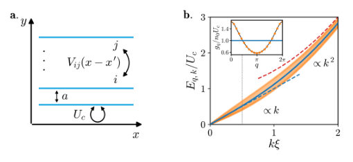
<figcaption class="paper-figure-caption"><b>Fig 1.</b> FIG. 1. (a) Array of Nt tubes with spacing a, intra-tube contact interaction Uc and inter-tube density coupling Vij(x− x′). (b) Dispersion of the uniform array Eq,k/Uc against kξ for the dipolar kernel at V = 0.3: solid, V = 0; shaded, the range over transverse q; dashed, the phonon limit E = √n0Uc k and the free-particle limit εk + n0Uc. Inset: gq(k) across the transverse zone at kξ = 0.5 (dotted line), against its V = 0 value (horizontal line).</figcaption>
</figure>
<figure class="paper-figure-card">
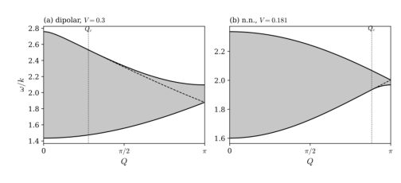
<figcaption class="paper-figure-caption"><b>Fig 2.</b> FIG. 2. Support of the pair spectrum ΠQ(ω|k), Eq. (36), at k = 0.1 (grey), for (a) the dipolar kernel at V = 0.3 and (b) the n.n. kernel at the matched bond V = 0.181. Solid lines are the band edges, critical points of ΩQ(q) at q = 0 and q = π or at the pair ±qc; the dashed line is the interior critical point that exists for Q &gt; Qc (dotted). Every line is an inverse-square-root singularity; the weight SQ, not shown, vanishes as Q2 at small Q and is largest near Q = π. For (b), Eq. (37) gives Qc = π −2V = 2.78 and the support [2 −V 2, 2] at Q = π, against 2.77 and [1.968, 2.003] from the full dispersion.</figcaption>
</figure>
<figure class="paper-figure-card">
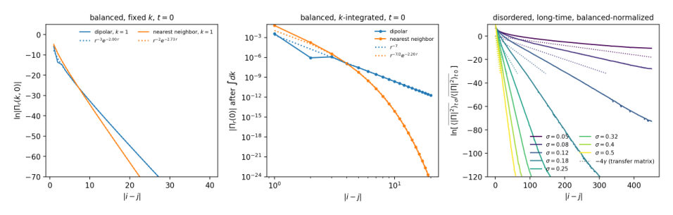
<figcaption class="paper-figure-caption"><b>Fig 3.</b> FIG. 3. Spatial structure of the momentum correlator at V = 0.3. Panel (a) shows the fixed-k profile of the uniform array at k = 1 for both kernels, from Eq. (42). Dotted lines give the predicted asymptotic forms of Eqs. (45) and (46), anchored to the data at r = 8: r−2e−2κEr with 2κE = 2.73 for nearest neighbors, and r−3e−2|k|r for dipolar. Both the decay rates and the algebraic prefactors are reproduced. Panel (b) shows the same profiles after integration over longitudinal momentum, on log-log axes, against the r−7 law of Eq. (49) and the r−7/2e−2r arccosh(Uc/2V ) form of Eq. (48). Panel (c) shows the normalized long-time average of Eq. (63) for disordered dipolar arrays at Nt = 1000 and...</figcaption>
</figure>
<figure class="paper-figure-card">
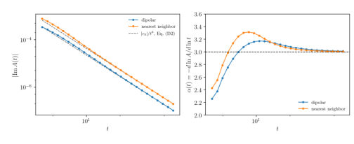
<figcaption class="paper-figure-caption"><b>Fig 4.</b> FIG. 4. Temporal decay of the small-Q response of the uni- form array at V = 0.3 for both kernels. The left panel shows |Im A(t)| against the t−3 law of Eq. (51), with c3 eval- uated from Eq. (E2). The nearest-neighbor curve uses the closed form of Eq. (52); the dipolar curve is Eq. (50) by di- rect quadrature, that reduction not applying when the band disperses with k. The right panel shows the local exponent α(t) = −d ln A/d ln t, which overshoots 3 before settling onto it once the subleading t−5 correction has died off. The cutoff used for it is discussed in Appendix I 5.</figcaption>
</figure>
<figure class="paper-figure-card">
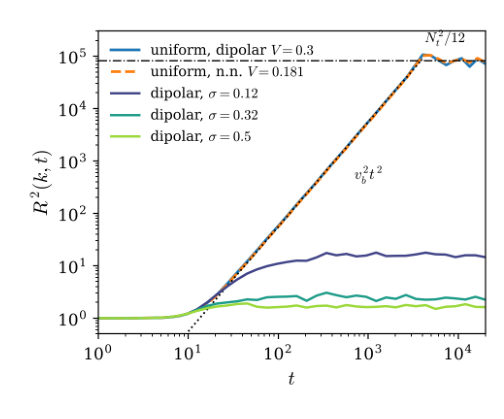
<figcaption class="paper-figure-caption"><b>Fig 5.</b> FIG. 5. Spatial variance R2(k, t) of the intensity profile, Eq. (54), at k = 1, Nt = 1000: uniform dipolar (V = 0.3) and n.n. (V = 0.181) arrays, the ballistic law v2 bt2 of Eq. (56) (dotted), the flat-ring value N 2 t /12 (dash-dotted), and disor- dered dipolar arrays at three σ (4 realizations, 20 source tubes each), which leave the ballistic line at t ∼ξloc/vb and saturate at the values of Fig. 10.</figcaption>
</figure>
</div>

<p><strong>Summary.</strong> This paper theoretically examines momentum transport and mode localization in arrays of 1D Bose gases coupled by dipolar interactions. Using Bogoliubov theory, the authors show that disorder localizes collective excitations, while the dipolar nature leads to distinct power-law decay rates compared to nearest-neighbor coupling. The findings are crucial for understanding transport in engineered quantum matter arrays.</p>
<p><strong>Why it may be interesting.</strong> This work provides a detailed theoretical framework for understanding how long-range, anisotropic interactions (dipolar) combined with disorder affect collective excitations in quasi-1D quantum systems, which is highly relevant to cold atom setups.</p>
<details>
<summary>Detailed structure</summary>
<p><strong>Main problem.</strong> The study investigates transverse momentum transport and the localization of collective modes in arrays of one-dimensional Bose gases interacting via dipolar forces.</p>
<p><strong>Main result.</strong> Density imbalance acts as quenched disorder, localizing the transverse collective modes by arresting the growth of the intensity profile. Furthermore, strong repulsion can destabilize the uniform state into staggered density modulations.</p>
<p><strong>Method.</strong> The analysis employs zero-temperature Bogoliubov theory, characterizing transport using momentum correlators (amplitude and intensity) and analyzing the system's response to disorder via Lyapunov exponents.</p>
<p><strong>Model / system.</strong> The system is an array of $N_t$ equidistant 1D Bose tubes coupled by dipolar interactions, analyzed under the key assumption of zero particle tunneling ($t_\perp=0$). Disorder is introduced via quenched random density imbalance across the tubes.</p>
<p><strong>Key observables.</strong> Inter-tube momentum correlator ($\Pi_{ij}(t)$), intensity $|\Pi_{ij}(t)|^2$, localization length ($\xi_{	ext{loc}}$), and the Lyapunov exponent.</p>
<p><strong>Important parameters / regimes.</strong> Dipolar coupling strength, disorder strength ($\sigma$), and the longitudinal momentum $k$.</p>
<p><strong>Assumptions / limitations.</strong> The analysis is restricted to zero temperature, and the primary approximation involves setting the inter-tube tunneling to zero ($t_\perp=0$).</p>
<p><strong>Figures summary.</strong> Figures illustrate the dispersion relation for the uniform array, compare spatial decay profiles of correlators for dipolar vs. nearest-neighbor coupling, and show the transfer-matrix Lyapunov exponent across the band.</p>
<p><strong>Paper structure.</strong> The paper progresses from setting up the Hamiltonian and using Bogoliubov theory to calculate momentum correlators in uniform arrays. It then analyzes the effect of quenched disorder, calculating localization measures like the Lyapunov exponent and comparing results from different theoretical approximations.</p>
</details>
<details>
<summary>Abstract</summary>
<p>We study transverse transport of longitudinal momentum in an array of one-dimensional Bose gases coupled by dipolar interactions without particle tunneling. Within zero-temperature Bogoliubov theory, we characterize this transport using the inter-tube momentum correlator and its squared magnitude, termed amplitude and intensity. In a uniform array, pairs of Bogoliubov quasiparticles propagate ballistically across the tubes, while their dephasing produces a $t^{-3}$ decay of the long-wavelength amplitude. Tube-to-tube density imbalance acts as quenched disorder and localizes the transverse collective modes. At fixed longitudinal momentum, this arrests the growth of the intensity profile, whose time-averaged spatial decay measures the localization length. Equal-time correlations are much less sensitive to disorder and primarily reflect the interaction range: in the uniform array they decay with tube separation as $r^{-7}$ for dipolar coupling, compared with exponential decay for nearest-neighbor coupling. Finally, sufficiently strong inter-tube repulsion destabilizes the longitudinally uniform state toward density modulations staggered between neighboring tubes, at a threshold independent of density imbalance.</p>
</details>
<p><sub><a href="#top">↑ back to top</a></sub></p>

<p><a id="paper-2610.38925"></a></p>
<h3 id="thermodynamic-cost-of-locally-maintaining-a-steady-state">⭐ <a href="http://arxiv.org/abs/2610.38925v1">Thermodynamic cost of locally maintaining a steady state</a></h3>
<p><strong>Highlighted author(s):</strong> Sarang Gopalakrishnan<br>
<strong>Authors:</strong> Sarang Gopalakrishnan<br>
<strong>Type:</strong> theory · <strong>Category:</strong> statistical mechanics · <strong>PDF:</strong> <a href="https://arxiv.org/pdf/2610.38925v1">https://arxiv.org/pdf/2610.38925v1</a><br>
<strong>Analysis basis:</strong> full PDF text, analyzed in chunks
<strong>Topic relevance:</strong> <code>Keldysh / 2PI / non-Gaussian methods</code> <strong>3/5</strong> · <code>non-equilibrium universality</code> <strong>3/5</strong> · <code>correlated / nonlocal dissipation</code> <strong>2/5</strong> · <code>driven-dissipative phase transition</code> <strong>2/5</strong> · <code>methods for driven-dissipative</code> <strong>2/5</strong> · <code>quantum measurements</code> <strong>1/5</strong></p>
<div class="figure-strip-hint">↔ Scroll figures horizontally</div>
<div class="paper-figures-scroll">
<figure class="paper-figure-card">
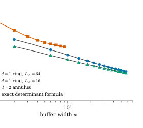
<figcaption class="paper-figure-caption"><b>Fig 1.</b> Figure 1: (a) The annular tripartition used throughout: a buffer B of width w sep- arates a region A from the rest of the system C; in d = 1 the annulus degenerates to the two buffer segments of the ring geometry used in panel (b). (b) Exact Gaus- sian conditional mutual information of the near-Coulomb state (5), computed from covariance determinants, with an infinitesimal regulator (C →C + T1, T1 = 10−6) keeping the CMI finite. d = 1: ring of N = 512 sites, blocks LA = 64 and 16, two- sided buffer of width w per side. Markers: exact evaluation; lines: the determinant formula (23) of Appendix A. d = 2: torus of 40 × 40 sites, A a disk of radius 5, B an annulus of width w.</figcaption>
</figure>
<figure class="paper-figure-card">
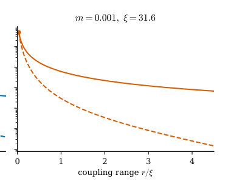
<figcaption class="paper-figure-caption"><b>Fig 2.</b> Figure 2: The range–dissipation tradeoff for C = m + 4sin2(k/2), at m = 0.01 and 0.001. Dashed curves: the lower bound from optimizing over (14). Solid curves: entropy production of the explicit bath construction (17). The bounds coincide at nearest-neighbor range. Both curves use the lattice momentum measure; the lower bound is not asserted to be physically attainable at higher range.</figcaption>
</figure>
</div>

<p><strong>Summary.</strong> This paper establishes fundamental trade-offs in non-equilibrium statistical mechanics, quantifying the minimum entropy production required to sustain steady states with long-range correlations. It rigorously compares continuous Gaussian processes against discrete jump processes, showing that the required entropy cost scales with the correlation length ($\xi^2$). The work is crucial for understanding the fundamental limits of maintaining non-equilibrium order in physical systems.</p>
<p><strong>Why it may be interesting.</strong> It provides rigorous, quantitative bounds connecting non-equilibrium thermodynamics (entropy production) directly to information-theoretic measures (CMI), which is central to understanding steady states in complex, interacting quantum and classical systems.</p>
<details>
<summary>Detailed structure</summary>
<p><strong>Main problem.</strong> The paper investigates the minimum entropy production required to maintain a steady state exhibiting long-range conditional correlations in various physical models.</p>
<p><strong>Main result.</strong> For local Gaussian processes, entropy production is lower-bounded by the square of the Markov length ($\hat{\sigma} \ge c \xi^2$), while for discrete jump processes, long-range correlations generally require violating detailed balance.</p>
<p><strong>Method.</strong> The analysis employs stochastic thermodynamics, information theory (CMI), and field-theoretic techniques (Gaussian processes, Keldysh formalism) to derive quantitative bounds.</p>
<p><strong>Model / system.</strong> The study compares continuous Gaussian processes (modeled by local quadratic Hamiltonians coupled to baths) with discrete jump processes on lattices. It also analyzes string order decay in local jump processes.</p>
<p><strong>Key observables.</strong> Conditional Mutual Information (CMI), Entropy Production ($\hat{\sigma}$), Markov Length ($\xi$), and String Order ($\langle S_n 
angle$).</p>
<p><strong>Important parameters / regimes.</strong> The length scale $\xi$ characterizing the exponential decay of CMI; the coupling range and the bath relaxation rate.</p>
<p><strong>Assumptions / limitations.</strong> The analysis often assumes the existence of a unique steady state and relies on specific structural properties like translational invariance or the applicability of local quadratic Hamiltonians.</p>
<p><strong>Figures summary.</strong> Not specified by the notes, but the structure suggests comparisons between different process types (Gaussian vs. Jump) and the scaling of correlations with distance.</p>
<p><strong>Paper structure.</strong> The paper progresses by first establishing the general framework relating entropy production to correlations, then analyzing continuous Gaussian processes, contrasting them with discrete jump processes, and finally examining structural constraints like string order decay.</p>
</details>
<details>
<summary>Abstract</summary>
<p>The Gibbs states of local Hamiltonians have short-range conditional correlations. To maintain a steady state with long-range conditional correlations, one might expect that a stochastic process must ``pay'' either in nonlocal moves or entropy production. Surprisingly, we find strictly local Gaussian processes that obey detailed balance and have unique steady states with arbitrarily long-range conditional correlations. We show that such processes must still produce entropy, if implemented using a local quadratic Hamiltonian coupled locally to equilibrium, rapidly relaxing baths. We lower-bound this entropy production in terms of the steady state's conditional mutual information (CMI); if the CMI decays exponentially with distance, the associated length-scale is called the Markov length $ξ$. The entropy production per site per relaxation time obeys $\hatσ\ge c ξ^2$ for large $ξ$, and with $c$ an implementation-dependent constant. We also bound the tradeoff between coupling range and entropy production. We contrast these Gaussian processes with jump processes on discrete state spaces, for which, under certain irreducibility assumptions, steady states with long-range CMI are only possible if detailed balance is violated. We conjecture (and present evidence) that rapidly mixing local jump processes cannot stabilize steady states with long-range CMI.</p>
</details>
<p><sub><a href="#top">↑ back to top</a></sub></p>

<p><a id="paper-2610.38832"></a></p>
<h3 id="gravitational-interactions-in-nuclear-clocks">⭐ <a href="http://arxiv.org/abs/2610.38832v1">Gravitational Interactions in Nuclear Clocks</a></h3>
<p><strong>Highlighted author(s):</strong> Mikhail Lukin<br>
<strong>Authors:</strong> Konstantin Beyer, Niklas E. Önne, Shimon Kolkowitz, Dolev Bluvstein, Mikhail Lukin, Jun Ye, Igor Pikovski<br>
<strong>Type:</strong> theory · <strong>Category:</strong> other · <strong>PDF:</strong> <a href="https://arxiv.org/pdf/2610.38832v1">https://arxiv.org/pdf/2610.38832v1</a><br>
<strong>Analysis basis:</strong> full PDF text, analyzed in chunks
<strong>Topic relevance:</strong> <code>quantum measurements</code> <strong>3/5</strong> · <code>analog quantum simulation</code> <strong>1/5</strong></p>
<div class="figure-strip-hint">↔ Scroll figures horizontally</div>
<div class="paper-figures-scroll">
<figure class="paper-figure-card">
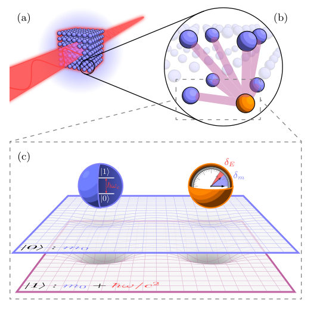
<figcaption class="paper-figure-caption"><b>Fig 1.</b> FIG. 1. We investigate the effect of gravitational interactions on the time-keeping of clocks consisting of many atoms with a nuclear clock transition, as shown in (a). (b) Each clock nucleus experiences the gravitational redshift from all other atoms due to the long-range gravitational interaction. (c) The mutual redshift arises from both the rest mass m0 of the atoms and from the energy superpositions of the clock nuclei, which gravitate according to mass-energy equivalence and add mE = ℏωc/c2 to the total mass if the nucleus is in the |1⟩state, creating a stronger gravitational potential. These result in the redshifts δm and δE, respectively, from a single neighboring atom. Summing over...</figcaption>
</figure>
<figure class="paper-figure-card">
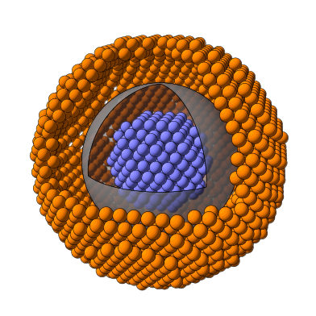
<figcaption class="paper-figure-caption"><b>Fig 2.</b> FIG. 2. Two nuclear clock systems, each consisting of a macroscopic number of atoms, will induce a mutual redshift on similar scales as the single-clock-system setup. Here, one clock (blue) can serve as the source, while the other (orange) as the probe of the gravitational field. This allows for direct modulation of the source clock’s gravitational field induced by its internal levels, and read-out with lock-in detection which can mitigate the inevitable background noise within one clock sample. The spherical geometry maximizes the interaction strength and can be utilized to mitigate dipole effects. Ad- ditionally, a Faraday shield between the two clocks could be used to further isolate the...</figcaption>
</figure>
<figure class="paper-figure-card">
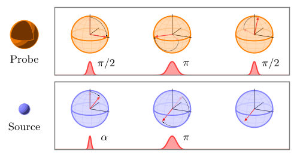
<figcaption class="paper-figure-caption"><b>Fig 3.</b> FIG. 3. Protocol to isolate the gravitational signature sourced by an energy superposition in a nuclear clock. The top row shows the spectroscopic sequence for the probe clock, while the bottom row shows the sequence for the source, represented on a Bloch sphere. The signal depends on the state of the clock through α, which can be isolated from the constant or slowly varying background noise contributions. The probe is initialized in the balanced superposition and is flipped by a π-pulse in the middle of the protocol. The source is prepared with angle α, i.e. an energy population proportional to p(α) = 1 −cos(α) [see Eq. (26)]. At time tR/2 the population is flipped, changing the...</figcaption>
</figure>
<figure class="paper-figure-card">
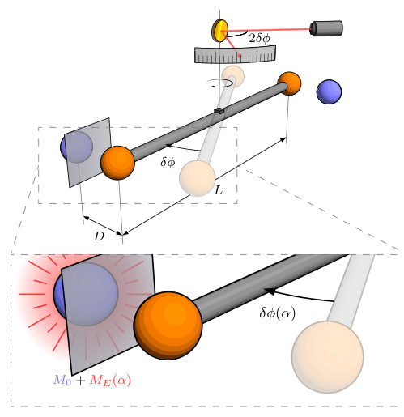
<figcaption class="paper-figure-caption"><b>Fig 4.</b> FIG. 4. Torsion balance experiment for the measurement of the active gravitational mass of energy in superposition. The excited state is heavier which leads to an additional deflection of the pendulum. By alternating the excitation and therefore the mass of the clocks through the parameter α [see Eq. (14)], the deflection angle changes.</figcaption>
</figure>
<figure class="paper-figure-card">
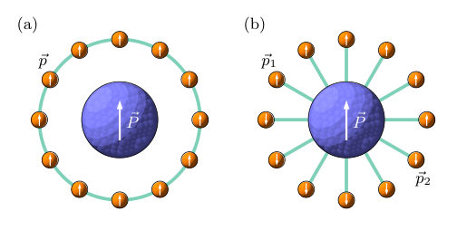
<figcaption class="paper-figure-caption"><b>Fig 5.</b> FIG. 5. We want to detect the monopole contribution of the gravitational field of the internal energy by measuring the red- shift of the clock nuclei in the shell (orange) which is sourced by the sphere in the center (blue). Electromagnetic dipole contributions cancel on average if the shell is spherical and has a uniform dipole alignment (a). However, the variance of the dipole interaction energies does not vanish, which leads to an inhomogeneous broadening that may mask the gravitational signal. Using a GHZ state, the broadening can in principle be canceled coherently (see main text). A more practical al- ternative scenario is to use only bipartite entangled states in order to cancel...</figcaption>
</figure>
</div>

<p><strong>Summary.</strong> This theoretical study explores using highly precise nuclear clocks to measure the mutual gravitational interaction between many atoms. It shows that the energy stored in quantum superpositions can generate a measurable, non-Newtonian gravitational redshift in large ensembles. While the redshift effect is potentially observable, the authors conclude that detecting gravity-induced entanglement is currently limited by spontaneous emission decoherence.</p>
<p><strong>Why it may be interesting.</strong> This work directly applies quantum control and precision measurement techniques (central to AMO physics) to test fundamental physics (gravity) at the quantum level, providing concrete, albeit challenging, experimental targets for future clock technology.</p>
<details>
<summary>Detailed structure</summary>
<p><strong>Main problem.</strong> The paper investigates the feasibility of observing mutual gravitational interactions between large ensembles of atoms/nuclei using ultra-precise atomic or nuclear clocks.</p>
<p><strong>Main result.</strong> The mutual gravitational redshift due to internal energy superpositions can become non-negligible for macroscopic ensembles, suggesting a pathway to probe gravity at short distances. However, observing gravity-induced entanglement is currently limited by spontaneous emission decoherence.</p>
<p><strong>Method.</strong> The authors derived the total Hamiltonian including terms for rest mass and energy-superposition sourced gravity, and analyzed the resulting frequency shifts and decoherence rates.</p>
<p><strong>Model / system.</strong> The system involves two-level atomic/nuclear clocks modeled by a Hamiltonian expanded in powers of $c^{-2}$ and $c^{-4}$. The analysis considers both the classical gravitational redshift ($\delta_m$) and the quantum, energy-superposition induced redshift ($\delta_E$).</p>
<p><strong>Key observables.</strong> Gravitational redshift ($\delta_t$), frequency shift ($\omega_c 	o (1 - \delta_t)\omega_c$), and entanglement rates ($\omega_{	ext{ent}}$).</p>
<p><strong>Important parameters / regimes.</strong> Macroscopic number of nuclei ($N$), solid-state lattice spacing ($a$), and the ratio of interaction strength to decoherence rate.</p>
<p><strong>Assumptions / limitations.</strong> The analysis assumes fixed atomic positions (neglecting motion) and treats the interaction Hamiltonian perturbatively. It also assumes that decoherence from spontaneous emission is the dominant limiting factor for entanglement.</p>
<p><strong>Figures summary.</strong> Figure 1 illustrates the gravitational redshift effect from both rest mass and energy superpositions. The notes also reference tables comparing parameters for Th-229, Sc-45, and U-235.</p>
<p><strong>Paper structure.</strong> The paper systematically builds the Hamiltonian for interacting quantum clocks, calculates the resulting frequency shifts from both classical and quantum gravitational terms, and finally assesses the feasibility of observing gravity-induced entanglement versus the decoherence rates.</p>
</details>
<details>
<summary>Abstract</summary>
<p>Atomic clocks achieve extraordinary precision through quantum control over large ensembles of atoms, with precision increasing and atom number advancing steadily. Emerging nuclear clock technology encodes clock states in nuclear rather than electronic transitions, offering a new frontier for precision measurement. Here we study whether a large ensemble of such clock nuclei could be used to observe their mutual gravitational interaction. We investigate the gravitational redshift induced by neighboring atoms, including nuclear energy superpositions as sources of gravity, giving rise to a genuinely quantum gravitational interaction between pairs of nuclei. We find that the resulting clock frequency shift due to mutual gravity may become non-negligible for a macroscopic number of nuclei, for instance in a solid-state thorium clock, and we propose approaches to mitigate electromagnetic field effects by exploiting spatial symmetry and high-precision spectroscopy. We further discuss how energy-induced mass superpositions could be directly probed using external gravitational field sensors. By contrast, observing gravity-induced entanglement involving clocks would require substantially greater experimental advances due to decoherence from spontaneous emission. Taken together, our results suggest that nuclear clocks, either alone or in combination with complementary sensors such as optomechanical systems, may offer a future route toward probing gravity at short distances and testing gravitating quantum source masses beyond the Newtonian limit.</p>
</details>
<p><sub><a href="#top">↑ back to top</a></sub></p>

<p><a id="paper-2610.39067"></a></p>
<h3 id="individually-addressed-logical-pauli-measurements-by-qldpc-surgery-on-a-trapped-ion-quantum-computer"><a href="http://arxiv.org/abs/2610.39067v1">Individually Addressed Logical Pauli Measurements by QLDPC Surgery on a Trapped Ion Quantum Computer</a></h3>
<p><strong>Authors:</strong> Surabhi Luthra, Alex Owens<br>
<strong>Type:</strong> experiment · <strong>Category:</strong> quantum information and computing · <strong>PDF:</strong> <a href="https://arxiv.org/pdf/2610.39067v1">https://arxiv.org/pdf/2610.39067v1</a><br>
<strong>Analysis basis:</strong> full PDF text, analyzed in chunks
<strong>Topic relevance:</strong> 🔥 <code>QC/QI experiment</code> <strong>5/5</strong> · <code>quantum measurements</code> <strong>3/5</strong></p>
<div class="figure-strip-hint">↔ Scroll figures horizontally</div>
<div class="paper-figures-scroll">
<figure class="paper-figure-card">
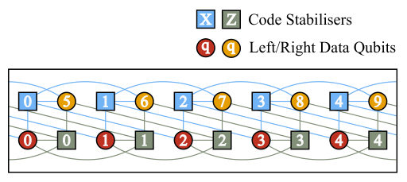
<figcaption class="paper-figure-caption"><b>Fig 1.</b> FIG. 1: The [[10,2,3]] generalised bicycle code construction with l = 5, a(x) = 1 + x2, and b(x) = 1 + x. For readability we omit all but the numeric label from the nodes, encoding X- and Z-type checks and left- and right-block data qubits in the colour and shape of the nodes as indicated in the legend.</figcaption>
</figure>
<figure class="paper-figure-card">
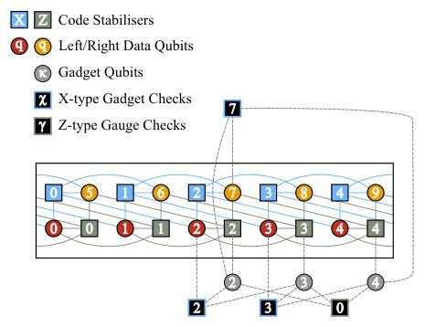
<figcaption class="paper-figure-caption"><b>Fig 2.</b> FIG. 2: [[10,2,3]] code merged with ¯X1 measurement gadget.</figcaption>
</figure>
<figure class="paper-figure-card">
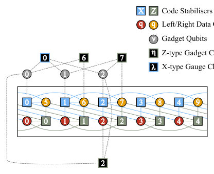
<figcaption class="paper-figure-caption"><b>Fig 3.</b> FIG. 3: [[10,2,3]] code merged with ¯Z2 measurement gadget. Here we label the gadget qubits as ν, Z-type gadget checks as η and X-type gauge checks as λ for distinction with the X-type gadget in Fig. 2.</figcaption>
</figure>
<figure class="paper-figure-card">
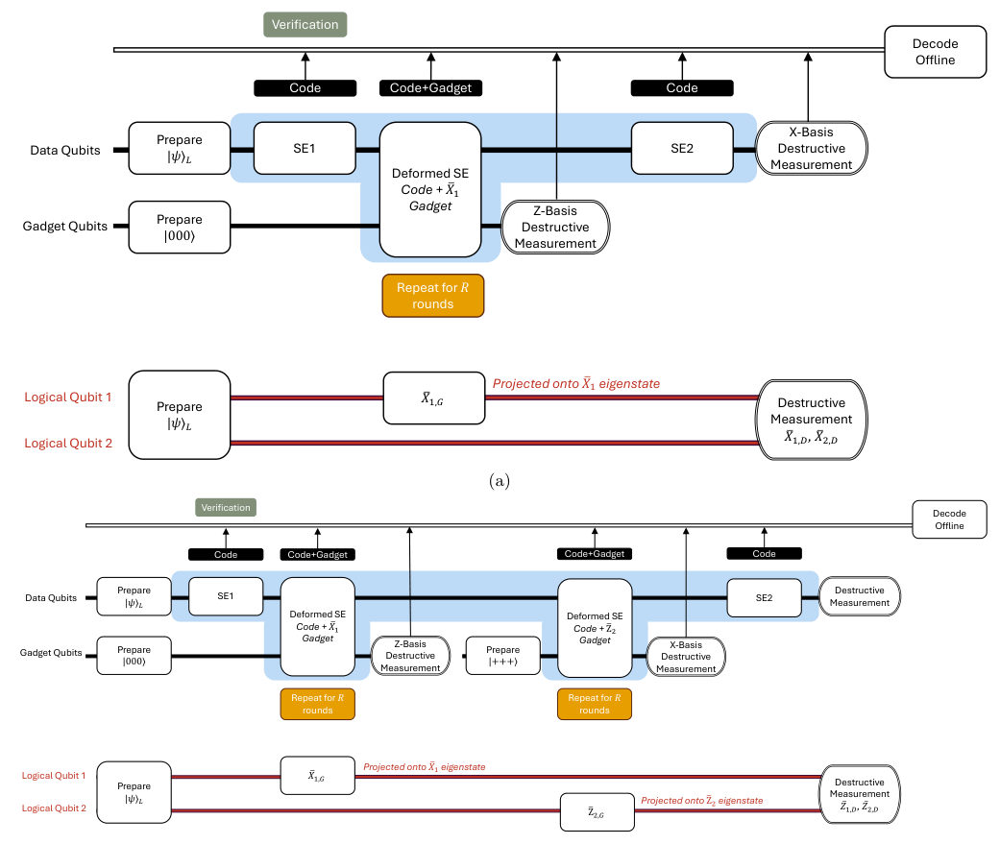
<figcaption class="paper-figure-caption"><b>Fig 4.</b> FIG. 4: Experiment flow at the physical (upper) and logical (lower) level. Ancilla not pictured. Blue shading represents which qubits comprise the code block at each time-step, representing the code deformation. (a) Single-gadget circuit. The logical state |ψ⟩L and is prepared on the data qubits and the gadget qubits κ are initialised in |0⟩. The preparation of |ψ⟩L is verified by trivial syndrome in the first bare code syndrome extraction SE1. The gadget and code are merged and the deformed codes syndrome extraction is repeated R times. The gadget is detached from the code by measuring the κ qubits in the Z basis. After the system is returned to the [[10,2,3]] code there is one final bare...</figcaption>
</figure>
<figure class="paper-figure-card">
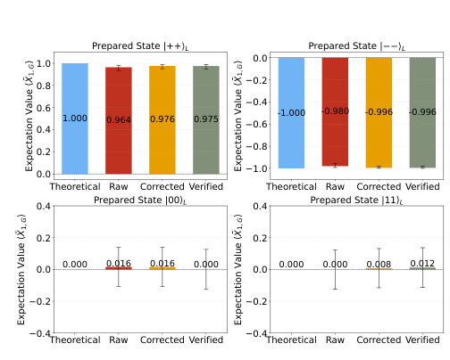
<figcaption class="paper-figure-caption"><b>Fig 5.</b> FIG. 5: Expectation of ⟨¯X1,G⟩for different logical state preparations, compared to the ideal value (Theoretical). Raw is directly inferred from χ2χ3χ7, Corrected is the Tesseract decoded result, Verified is the Corrected result calculated only from the shots passing verification. Error bars are 95% Jeffreys intervals.</figcaption>
</figure>
</div>

<p><strong>Summary.</strong> This paper demonstrates the implementation of QLDPC surgery, a technique allowing for individual logical Pauli measurements within a multi-qubit code block, on a trapped ion quantum computer. By using ancillary 'gadget' qubits, the authors successfully suppress measurement errors over multiple syndrome extraction rounds. This work provides critical hardware validation for the generalized surgery primitive required for scaling fault-tolerant quantum computation using QLDPC codes.</p>
<p><strong>Why it may be interesting.</strong> This work provides a crucial hardware validation of a generalized primitive (QLDPC surgery) necessary for scaling quantum computation beyond current limitations, directly impacting the feasibility of fault-tolerant quantum algorithms.</p>
<details>
<summary>Detailed structure</summary>
<p><strong>Main problem.</strong> The paper addresses the challenge of performing selective, individual logical Pauli measurements within the highly entangled structure of QLDPC codes to enable fault-tolerant quantum computation.</p>
<p><strong>Main result.</strong> The authors successfully demonstrated the generalized QLDPC surgery primitive on a trapped ion quantum computer, achieving error rates below 0.26% after syndrome extraction, validating the approach for Pauli-based computing.</p>
<p><strong>Method.</strong> The core method involves implementing QLDPC surgery, which uses ancillary 'gadget' systems transiently entangled with the code block to perform non-destructive Pauli measurements.</p>
<p><strong>Model / system.</strong> The experiment is performed on a trapped ion quantum computer using Quantinuum’s H2-2 processor, implementing measurements on a specific $[[10,2,3]]$ generalized bicycle code.</p>
<p><strong>Key observables.</strong> Error rates for single-round and three-round syndrome extraction (e.g., $ar{X}_1$ measurement error rate of 0.72% initially, suppressed to &lt;0.26%), and spectator qubit preservation error.</p>
<p><strong>Important parameters / regimes.</strong> The code used is a $[[10,2,3]]$ generalized bicycle code; the process involves multiple rounds ($R=3$) of syndrome extraction to suppress errors.</p>
<p><strong>Assumptions / limitations.</strong> The primary assumptions relate to the connectivity defined by the Tanner graph for surgery and the error model, which may not fully account for measurement cross-talk.</p>
<p><strong>Figures summary.</strong> Figures illustrate the structure of the code and the merging of the measurement gadget with the code block, showing the support of the gadget components ($\kappa, \chi, \gamma$).</p>
<p><strong>Paper structure.</strong> The paper progresses by establishing the need for selective measurement, detailing the gadget construction for $ar{X}_1$, presenting the hardware implementation on the trapped ion platform, and finally validating the primitive through single-round, three-round, and sequential two-gadget measurements.</p>
</details>
<details>
<summary>Abstract</summary>
<p>Quantum low-density parity check (QLDPC) codes may lead to order-of-magnitude reductions in the qubit overhead required for fault-tolerant quantum computation. Achieving this improved overhead requires logical operations that selectively address individual logical qubits encoded within multi-qubit code blocks. Recently proposed architectures achieve this through QLDPC surgery, in which non-destructive Pauli measurements are performed using ancillary ''gadget'' systems transiently entangled with the code block, generalising lattice surgery. Here we implement QLDPC surgery on a [[10,2,3]] generalised bicycle code using Quantinuum's H2-2 trapped ion processor. A single-round surgery measurement using seven gadget qubits measures the $\bar{X}_1$ operator with a 0.72 [0.32, 1.41]% (95% credible interval) error rate and agrees with subsequent transversal measurement with 1.03 [0.60, 1.65]% error. Decoding across three rounds of syndrome extraction suppresses the gadget measurement error, reducing the error rate to below 0.26%. The syndrome after surgery confirms return to the code space and the unaddressed ''spectator'' qubit is preserved with error 0.21 [0.04, 0.67]% during the three-round measurement. We further demonstrate composition of conjugate basis gadgets by sequentially measuring $\bar{X}_1$ then $\bar{Z}_2$, reusing the gadget qubits, and obtain a 1.12 [0.60, 1.94]% error in the $\bar{Z}_2$ measurement. These results constitute a hardware validation of the generalised surgery primitive underlying Pauli-based computing for QLDPC architectures.</p>
</details>
<p><sub><a href="#top">↑ back to top</a></sub></p>

<p><a id="paper-2610.40638"></a></p>
<h3 id="entanglement-diagnostics-of-stochastic-resetting-steady-states-theory-and-measurement-on-superconducting-qubits"><a href="http://arxiv.org/abs/2610.40638v1">Entanglement diagnostics of stochastic-resetting steady states: theory and measurement on superconducting qubits</a></h3>
<p><strong>Authors:</strong> Jakob Murauer, Sabine Tornow, Manas Kulkarni, Eli Barkai, Satya N. Majumdar, Monalisa Singh Roy<br>
<strong>Type:</strong> both · <strong>Category:</strong> statistical mechanics · <strong>PDF:</strong> <a href="https://arxiv.org/pdf/2610.40638v1">https://arxiv.org/pdf/2610.40638v1</a><br>
<strong>Analysis basis:</strong> full PDF text, analyzed in chunks
<strong>Topic relevance:</strong> 🔥 <code>QC/QI experiment</code> <strong>4/5</strong> · <code>correlated / nonlocal dissipation</code> <strong>3/5</strong> · <code>driven-dissipative phase transition</code> <strong>3/5</strong> · <code>methods for driven-dissipative</code> <strong>3/5</strong> · <code>non-equilibrium universality</code> <strong>3/5</strong> · <code>quantum measurements</code> <strong>3/5</strong> · <code>analog quantum simulation</code> <strong>2/5</strong> · <code>Keldysh / 2PI / non-Gaussian methods</code> <strong>1/5</strong></p>
<div class="figure-strip-hint">↔ Scroll figures horizontally</div>
<div class="paper-figures-scroll">
<figure class="paper-figure-card">
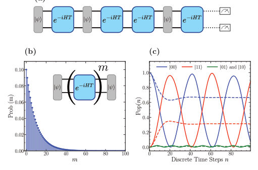
<figcaption class="paper-figure-caption"><b>Fig 1.</b> FIG. 1. (a) Quantum circuit of length n = 4 implementing the discrete-time reset protocol with reset probability p to the reset state |ψ0⟩. At the end of the circuit the reduced or full density matrix is reconstructed by quantum state tomography (QST). (b) Geometric distribution p(1 −p)m of the age m Eq. (10)], the number of unitary steps since the most recent reset, for p = 0.1; the inset shows the reset-free block of the circuit. (c) Population probabilities of the states |00⟩, |01⟩, |10⟩, and |11⟩for the product-state reset |ψ0⟩= |00⟩, at Ω= 1, α = 3.2, and p = 0.1, as a function of the total number of steps n. The probabilities for |01⟩and |10⟩coincide. With a finite reset probability...</figcaption>
</figure>
<figure class="paper-figure-card">
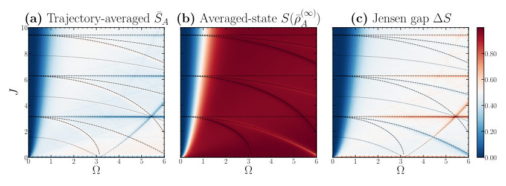
<figcaption class="paper-figure-caption"><b>Fig 2.</b> FIG. 2. Entropy diagnostics of the product-state reset stationary state in the (Ω, J) plane at p = 0.1. (a) Trajectory-averaged entropy ¯SA, Eq. (13), evaluated by trajectory sampling. (b) Averaged-state entropy S(¯ρ(∞) A ), Eq. (12), from the closed form (29). (c) Jensen gap ∆S, Eq. (47), the difference between the two entropy evaluations. All three panels, and those of Fig. 3, share one colour scale, from 0 (blue) through 0.5 (white) to 1 bit (red). Both entropies are below 0.17 bits at small Ω, where the state is near a Hamiltonian eigenstate, and rise across a crossover whose midpoint lies at ( √</figcaption>
</figure>
<figure class="paper-figure-card">
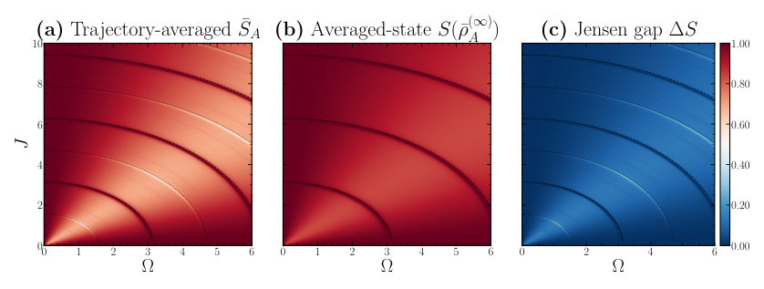
<figcaption class="paper-figure-caption"><b>Fig 3.</b> FIG. 3. Entropy diagnostics of the Bell-reset stationary state in the (Ω, J) plane at p = 0.1. Away from the arcs both entropies depend on α = J/Ωalone, up to corrections of order p. They equal 1 bit along both axes, are lowest near J = Ω, and differ by less than 0.14 bits over 90 percent of the plotted plane. (a) Trajectory-averaged entropy ¯SA, Eq. (13), evaluated by trajectory sampling. The dark arcs of panel (b) recur, and ¯SA is in addition lowered (light to blue) on the half-integer circles √</figcaption>
</figure>
<figure class="paper-figure-card">
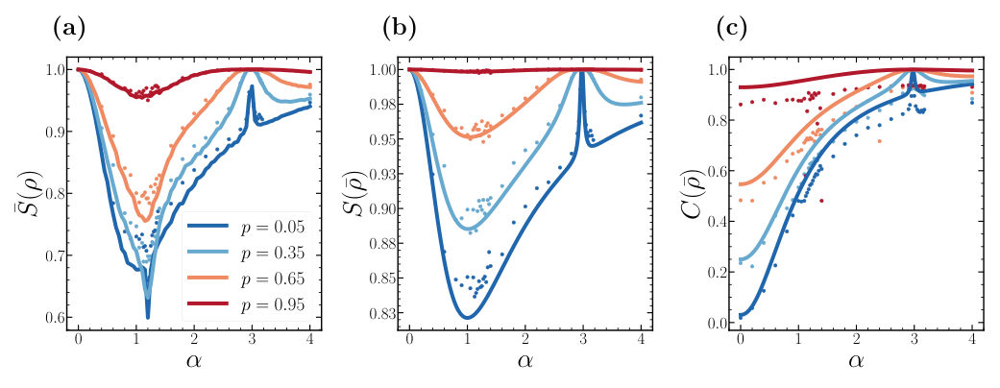
<figcaption class="paper-figure-caption"><b>Fig 4.</b> FIG. 4. Entanglement diagnostics of the Bell-reset stationary state against the ibm_pittsburgh measurement, from left to right: (a) trajectory-averaged entropy ¯SA [Eq. (13)], (b) averaged-state entropy S(¯ρ(∞) A ) [Eq. (12)], and (c) Wootters concurrence C(¯ρ∞) [Eq. (30)], as functions of the coupling ratio α = J/Ωat Ω= 1, for p ∈{0.05, 0.35, 0.65, 0.95} (from dark blue for p = 0.05 to dark red for p = 0.95). Solid curves: exact noiseless evaluation of the renewal sum (9). Symbols: hardware data from qubits 4 and 5 of ibm_pittsburgh, reconstructed by quantum state tomography with 104 shots per setting, using dynamical decoupling with gate and measurement twirling. The sampling is dense...</figcaption>
</figure>
<figure class="paper-figure-card">
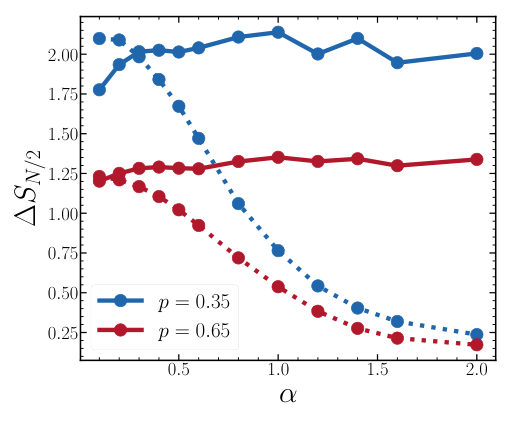
<figcaption class="paper-figure-caption"><b>Fig 5.</b> FIG. 5. Half-chain Jensen gap [Eq. (47)] of the reset station- ary state at N = 12 versus the coupling ratio α = J/Ω, for the tiled-Bell reset (solid) and the product-state reset (dot- ted), at p = 0.35 and 0.65 (dark blue and red). Markers are the exact evaluation; entropies in bits. The two coupling ra- tios of Fig. 6 are read off this profile: comparable reset states at α = 0.2, an order-of-magnitude separation at α = 2.0.</figcaption>
</figure>
</div>

<p><strong>Summary.</strong> This work analyzes entanglement in quantum systems driven into non-equilibrium steady states via stochastic resetting. By comparing theoretical predictions for the transverse-field Ising chain with superconducting qubit measurements, the authors show that different entanglement diagnostics (like entropy vs. concurrence) respond differently to the reset process. The key finding establishes a direct physical interpretation for the difference between averaged and trajectory-averaged entanglement measures.</p>
<p><strong>Why it may be interesting.</strong> It provides a concrete, measurable link between non-equilibrium statistical mechanics (stochastic resetting) and quantum information measures (entanglement), using superconducting qubits as a testbed.</p>
<details>
<summary>Detailed structure</summary>
<p><strong>Main problem.</strong> The paper investigates how entanglement diagnostics behave in non-equilibrium steady states generated by stochastic resetting protocols.</p>
<p><strong>Main result.</strong> The Jensen gap of entanglement entropy equals the Holevo information quantifying subsystem memory of the reset time, and this information grows with chain length for a Bell-state reset.</p>
<p><strong>Method.</strong> The authors derive closed-form theoretical results for the transverse-field Ising chain and validate them by performing measurements on an IBM superconducting quantum processor.</p>
<p><strong>Model / system.</strong> The system is the transverse-field Ising chain, subjected to a discrete-time stochastic resetting protocol. The dynamics are governed by a mixture of unitary evolution and resetting to a fixed state.</p>
<p><strong>Key observables.</strong> Averaged-state entropy, trajectory-averaged entropy, Wootters concurrence, and the Jensen gap of entanglement entropy.</p>
<p><strong>Important parameters / regimes.</strong> Reset probability ($p$), coupling ratio ($\alpha$), and chain length ($N$, up to 12).</p>
<p><strong>Assumptions / limitations.</strong> The trajectory-averaged entropy is obtained without postselection, unlike monitored circuits which require sampling rare measurement records.</p>
<p><strong>Figures summary.</strong> Figure 1 illustrates the quantum circuit implementing the discrete-time reset protocol and the associated geometric distribution of the system's 'age' (time since last reset).</p>
<p><strong>Paper structure.</strong> The paper first establishes the theoretical framework for stochastic resetting, deriving exact results for small systems. It then compares these theory results against hardware measurements on superconducting qubits, focusing on the differential behavior of entropy diagnostics versus concurrence.</p>
</details>
<details>
<summary>Abstract</summary>
<p>Stochastic resetting drives quantum systems into nonequilibrium stationary states unreachable under uninterrupted unitary evolution, and their entanglement depends on whether the reset history is resolved or averaged over. We study this interplay in the transverse-field Ising chain, deriving closed-form results for two qubits and evaluating chains of up to 12 qubits exactly. In the two-qubit system, these closed-form results show that phase matching between energy eigenstates produces resonances, and their visibility in the stationary state is determined by the symmetry of the reset state. Measurements on an IBM superconducting processor show the entropies evaluated before and after the reset average closely following noiseless predictions with no fitted parameter, while concurrence lies below prediction across most of the hardware measurements. The two diagnostics respond differently because they read different components of the same reconstructed state, and a depolarizing model captures the concurrence suppression with one fitted parameter. The difference between the two entropies, i. e., the Jensen gap of entanglement entropy, equals the Holevo information that a subsystem retains about the time since the last reset. With a Bell-state reset, this information grows with chain length across a half-chain cut over the sizes studied, without visible saturation at the smaller reset probabilities. Since reset times are sampled and recorded classically, the trajectory-averaged entropy, and with it the Jensen gap, is obtained without postselection, in contrast to monitored circuits, where trajectory-resolved entanglement requires sampling exponentially rare measurement records.</p>
</details>
<p><sub><a href="#top">↑ back to top</a></sub></p>

<p><a id="paper-2610.40593"></a></p>
<h3 id="probing-fluctuations-in-photon-emission-statistics-of-spin-injected-quantum-dots-with-time-dependent-electronic-excitation"><a href="http://arxiv.org/abs/2610.40593v1">Probing fluctuations in photon emission statistics of spin injected quantum dots with time dependent electronic excitation</a></h3>
<p><strong>Authors:</strong> Chiran Wijesundara, Vincent Iglesias-Cardinale, Yuan Lu, Herbert Fotso, Bo Xu, Tim Thomay<br>
<strong>Type:</strong> both · <strong>Category:</strong> other · <strong>PDF:</strong> <a href="https://arxiv.org/pdf/2610.40593v1">https://arxiv.org/pdf/2610.40593v1</a><br>
<strong>Analysis basis:</strong> full PDF text, analyzed in chunks
<strong>Topic relevance:</strong> 🔥 <code>Full counting statistics</code> <strong>4/5</strong> · 🔥 <code>methods for driven-dissipative</code> <strong>4/5</strong> · <code>interference shaping light</code> <strong>3/5</strong> · <code>quantum optics experiment</code> <strong>3/5</strong> · <code>correlated / nonlocal dissipation</code> <strong>2/5</strong> · <code>quantum measurements</code> <strong>2/5</strong> · <code>Keldysh / 2PI / non-Gaussian methods</code> <strong>1/5</strong> · <code>Tavis-Cummings &amp; cavity-many-emitter</code> <strong>1/5</strong> · <code>analog quantum simulation</code> <strong>1/5</strong> · <code>driven-dissipative phase transition</code> <strong>1/5</strong></p>
<div class="figure-strip-hint">↔ Scroll figures horizontally</div>
<div class="paper-figures-scroll">
<figure class="paper-figure-card">
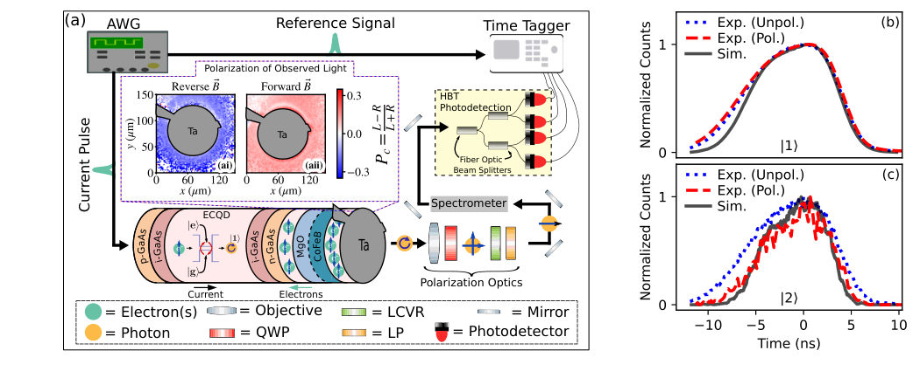
<figcaption class="paper-figure-caption"><b>Fig 1.</b> FIG. 1. (a) Experimental set up: Beginning with the arbitrary waveform generator (AWG), an electronic pulse is applied to the ECQD ensemble depicted here in its place in the cylindrical sample. A reference pulse is simultaneously sent to the time tagger. The excitation stimulates the emission of photons into a full 4π solid angle which are collected using an infinity-corrected objective located coaxially with the stack and analyzed with a series of optical elements. Polarization analysis is performed using a quarter-wave plate (QWP) in combination with a liquid-crystal variable retarder (LCVR) and a linear polarizer (LP) to isolate spin components. The signal is then spectrally resolved by...</figcaption>
</figure>
<figure class="paper-figure-card">
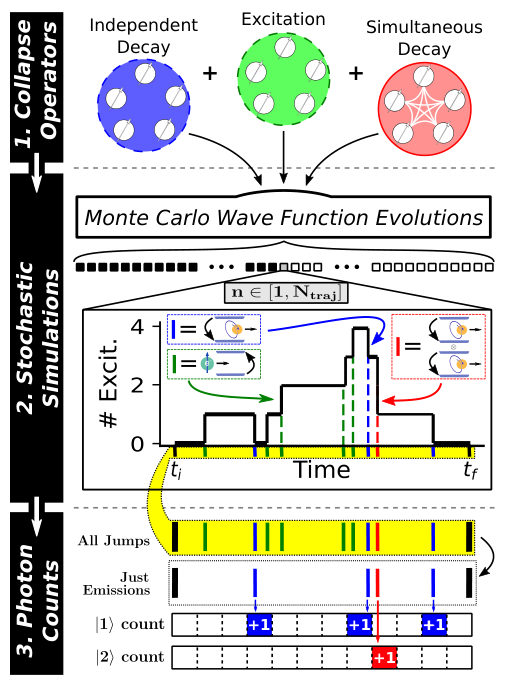
<figcaption class="paper-figure-caption"><b>Fig 2.</b> FIG. 2. The simulation scheme begins with constructing the desired collapse operators. These are then implemented in a Monte Carlo wavefunction method, stochastically producing jump times. Excitations are disregarded and the |1⟩- and |2⟩- photon events are identified based on the jump times of their associated operator.</figcaption>
</figure>
<figure class="paper-figure-card">
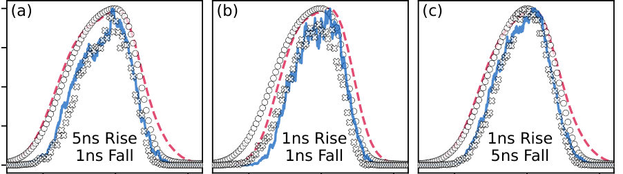
<figcaption class="paper-figure-caption"><b>Fig 3.</b> FIG. 3. Variation of the applied current pulse, described in each panel by the rising and falling time of the pulse, produces mild variations in the experimentally observed |1⟩-photon events. Constructing the excitation function Ω(t) so the simulated |1⟩-photon curve matches the corresponding experimental data produces significant overlap in the simulated and experimental |2⟩-photon curves.</figcaption>
</figure>
<figure class="paper-figure-card">
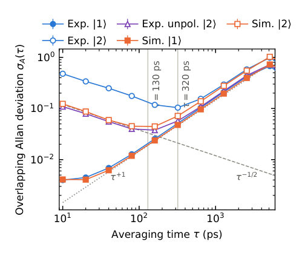
<figcaption class="paper-figure-caption"><b>Fig 4.</b> FIG. 4. Comparison of Allan deviation of |2⟩and |1⟩-photon for experimental (pol. and unpol.) and simulation. Refer- ence lines (dotted and dashed) refer to standard mapping for physical noise sources. It should be noted the noise is in the time domain not in number state.</figcaption>
</figure>
</div>

<p><strong>Summary.</strong> This paper investigates how spin polarization controls the higher-order photon emission statistics from quantum dots. Using time-resolved HBT measurements and advanced simulation, the authors show that two-photon emission exhibits fluctuations directly linked to the spin state of the injected electrons. This opens a pathway for electrically driven, spin-controlled sources of multi-photon Fock states.</p>
<p><strong>Why it may be interesting.</strong> This work provides a sophisticated testbed for studying spin-conditioned multi-emitter dynamics in solid-state quantum light sources, moving beyond simple antibunching measurements to characterize higher-order correlations.</p>
<details>
<summary>Detailed structure</summary>
<p><strong>Main problem.</strong> The study aims to probe the higher-order photon emission statistics from spin-injected quantum dots to understand the underlying multi-emitter dynamics beyond simple second-order correlation measurements.</p>
<p><strong>Main result.</strong> Pronounced fluctuations in the two-photon ($|2
angle$) emission statistics, which vanish upon demagnetization, establish a direct link between multi-photon emission dynamics and the spin polarization of the injected carriers.</p>
<p><strong>Method.</strong> The research combines time-resolved, extended Hanbury Brown-Twiss (HBT) interferometry with advanced theoretical modeling using Monte Carlo Wavefunction evolution incorporating joint collapse operators.</p>
<p><strong>Model / system.</strong> The physical system is an ensemble of InGaAs/GaAs quantum dots driven by spin-polarized electron injection from a CoFeB layer. The theoretical model uses a stochastic wave function evolution framework to capture multi-emitter dynamics.</p>
<p><strong>Key observables.</strong> Time-resolved photon-number statistics, specifically the counts for $|1
angle$ and $|2
angle$ Fock states, and the Allan deviation for these photon numbers.</p>
<p><strong>Important parameters / regimes.</strong> Spin polarization of injected carriers, the excitation pulse profile $\Omega(t)$, and the coupling strength $\kappa$ governing joint emission.</p>
<p><strong>Assumptions / limitations.</strong> The model phenomenologically incorporates joint collapse operators that do not arise from standard Weisskopf-Wigner treatments, and the analysis assumes the system can be described by a stochastic wave function evolution.</p>
<p><strong>Figures summary.</strong> Figures show time-resolved counts of $|1
angle$ and $|2
angle$ photons for polarized vs. unpolarized samples, demonstrating fluctuations only in the polarized case. Other figures compare Allan deviations and confirm simulation fidelity across varying excitation pulse shapes.</p>
<p><strong>Paper structure.</strong> The paper establishes the experimental setup (HBT/time-tagging) to measure time-resolved photon statistics. It then develops a theoretical model using collapse operators to capture multi-emitter dynamics. Finally, it compares the simulation results against the measured polarization-dependent fluctuations in $|2
angle$ photon counts.</p>
</details>
<details>
<summary>Abstract</summary>
<p>Electrically spin-injected ensembles of InGaAs/GaAs quantum dots emit circularly polarized single photons, with the emission helicity determined by the spin polarization of the injected electrons. A ferromagnetic CoFeB spin-injection layer with perpendicular magnetic anisotropy, combined with an MgO tunnel barrier, enables spin-polarized electron injection into the quantum-dot active region, resulting in circularly polarized photon emission at zero applied magnetic field. These devices realize direct spin-charge-photon conversion in an electrically driven, microelectronics-compatible quantum light source that operates without an external pump laser. Using an extended Hanbury Brown-Twiss interferometer with four detectors and time-tagged readout, we measure time-resolved photon-number statistics that resolve up to $|2\rangle$ Fock states within a single excitation cycle. While single-photon ($n=|1\rangle$) emission tracks the electrical excitation pulse as expected, the two-photon ($n=|2\rangle$) statistics exhibit pronounced fluctuations at multiple temporal positions within the pulse. These fluctuations vanish upon demagnetization of the spin-injection layer, establishing a direct link between the multi-photon emission dynamics and the spin polarization of the injected carriers. The observations indicate that spin injection controls not only the helicity of the emitted photons but also higher-order temporal correlations of the emission. The behavior is phenomenologically captured by inserting both a variable excitation mechanism and a set of multi-emitter collapse operators within a stochastic wave function evolution. The platform thus opens a route to electrically driven, spin-controlled single and multi-photon Fock-state sources and provides a testbed for spin-conditioned multi-emitter dynamics in solid-state quantum light sources.</p>
</details>
<p><sub><a href="#top">↑ back to top</a></sub></p>

<p><a id="paper-2610.38741"></a></p>
<h3 id="mixed-state-topological-transition-and-emergent-fractionalized-supersymmetry-in-the-non-abelian-kitaev-spin-liquid"><a href="http://arxiv.org/abs/2610.38741v1">Mixed-State Topological Transition and Emergent Fractionalized Supersymmetry in the Non-Abelian Kitaev Spin Liquid</a></h3>
<p><strong>Authors:</strong> Zhou-Quan Wan, Hong Yao, Shao-Kai Jian<br>
<strong>Type:</strong> theory · <strong>Category:</strong> statistical mechanics · <strong>PDF:</strong> <a href="https://arxiv.org/pdf/2610.38741v1">https://arxiv.org/pdf/2610.38741v1</a><br>
<strong>Analysis basis:</strong> full PDF text, analyzed in chunks
<strong>Topic relevance:</strong> 🔥 <code>driven-dissipative phase transition</code> <strong>4/5</strong> · 🔥 <code>methods for driven-dissipative</code> <strong>4/5</strong> · 🔥 <code>non-equilibrium universality</code> <strong>4/5</strong> · <code>analog quantum simulation</code> <strong>3/5</strong> · <code>correlated / nonlocal dissipation</code> <strong>3/5</strong> · <code>Keldysh / 2PI / non-Gaussian methods</code> <strong>2/5</strong> · <code>quantum measurements</code> <strong>1/5</strong></p>
<div class="figure-strip-hint">↔ Scroll figures horizontally</div>
<div class="paper-figures-scroll">
<figure class="paper-figure-card">
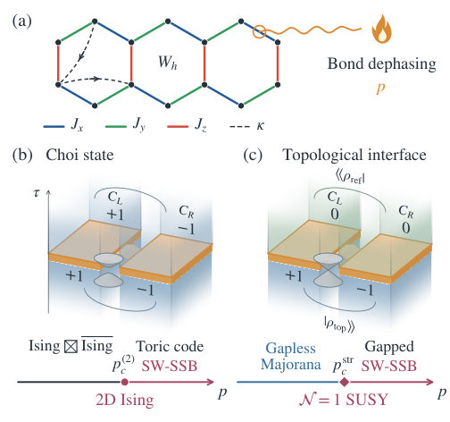
<figcaption class="paper-figure-caption"><b>Fig 1.</b> FIG. 1. (a) Kitaev honeycomb model with bond couplings Jx, Jy, Jz and chiral coupling κ. Dashed arrows indicate oriented next-nearest- neighbor hopping, and Wh denotes the plaquette flux. Bond dephas- ing acts as Eα ij(ρ) = (1 −p)ρ + pBα ijρBα ij. (b) Choi-state geometry with no Chern mismatch across the temporal interface. Increasing p condenses the inter-copy boson ψ ¯ψ, producing SW-SSB and con- verting Ising ⊠Ising topological order into toric-code order. The transition at p(2) c belongs to the two-dimensional Ising universality class. (c) Temporal interface between topological and trivial states. The Chern mismatch |∆C| = 1 supports a gapless Majorana mode at weak dephasing. Increasing...</figcaption>
</figure>
<figure class="paper-figure-card">
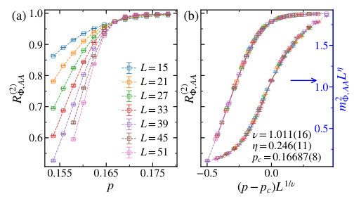
<figcaption class="paper-figure-caption"><b>Fig 2.</b> FIG. 2. Inter-copy condensation in the normalized Choi state. (a) R´enyi-2 Wilson-string correlation ratio R(2) Φ = 1 − S(2) Φ (qmin)/S(2) Φ (0) for L = 15, 21, . . . , 51. Here S(2) Φ (q) = L−2 P</figcaption>
</figure>
<figure class="paper-figure-card">
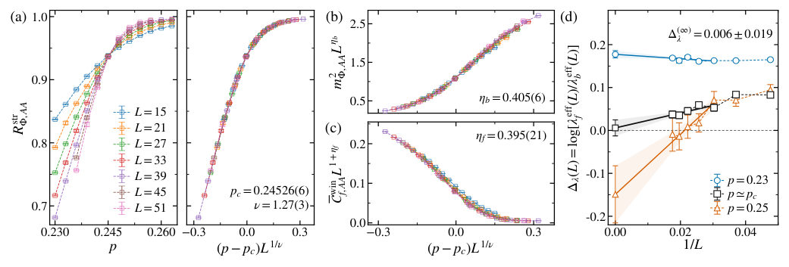
<figcaption class="paper-figure-caption"><b>Fig 3.</b> FIG. 3. Emergent supersymmetry at the temporal interface. (a) Inter-copy correlation ratio Rstr Φ,AA for L = 15, 21, . . . , 51 (left) and its finite-size collapse (right), yielding pc = 0.24526(6) and ν = 1.27(3). (b),(c) Data collapses of the rescaled bosonic estimator m2 Φ,AALηb and</figcaption>
</figure>
</div>

<p><strong>Summary.</strong> This work analyzes how bond dephasing drives a mixed-state topological transition in the Kitaev spin liquid. By studying the system's evolution in the doubled Hilbert space, the authors identify a transition point where gapless Majorana modes emerge and subsequently develop emergent N=1 supersymmetry. The methodology combines advanced quantum simulation techniques with critical exponent analysis.</p>
<p><strong>Why it may be interesting.</strong> The connection between non-equilibrium dynamics (dephasing) and the emergence of fundamental symmetries like supersymmetry in a highly entangled quantum magnet is a rich area for AMO physics and open quantum systems.</p>
<details>
<summary>Detailed structure</summary>
<p><strong>Main problem.</strong> The study investigates mixed-state topological transitions and the emergence of fractionalized supersymmetry within the non-Abelian Kitaev spin liquid when subjected to bond-dephasing.</p>
<p><strong>Main result.</strong> The dephasing drives a mixed-state topological transition, leading to emergent N=1 supersymmetry, with Monte Carlo simulations yielding critical exponents consistent with exact supersymmetric values.</p>
<p><strong>Method.</strong> The analysis employs techniques involving the doubled Hilbert space (Choi map), Monte Carlo simulations, and finite-size scaling analysis to characterize the critical points.</p>
<p><strong>Model / system.</strong> The system is the spin-1/2 Kitaev honeycomb model undergoing bond dephasing described by a specific master equation. The analysis utilizes concepts from topological order, mapping the problem to inter-copy fermion pairing instabilities.</p>
<p><strong>Key observables.</strong> Gauge-invariant Rényi-2 pairing correlator, critical exponents ($
u, \eta$), and the relative anisotropy mismatch ($\Delta\lambda$).</p>
<p><strong>Important parameters / regimes.</strong> Dephasing strength ($p$), critical points ($p_c$), and the resulting topological order (Ising $\otimes$ Ising to Toric Code).</p>
<p><strong>Assumptions / limitations.</strong> The analysis relies on mapping the problem to the doubled Hilbert space and interpreting the resulting state via 'unfolding' the density matrix.</p>
<p><strong>Figures summary.</strong> Figures illustrate the transition from Ising $\otimes$ Ising to Toric code order in the Choi state, the gapless Majorana mode at a temporal interface, and finite-size scaling collapses confirming critical exponents.</p>
<p><strong>Paper structure.</strong> The paper systematically analyzes two transitions: first, the inter-copy anyon condensation in the Choi state, and second, the transition occurring at a temporal interface between topological and trivial Kitaev states, linking both to emergent supersymmetry.</p>
</details>
<details>
<summary>Abstract</summary>
<p>We study a mixed-state topological transition in the non-Abelian Kitaev spin liquid driven by a bond-dephasing channel. In the vectorized picture, bond dephasing maps onto interactions between two time-reversed fractionalized Majorana systems coupled to gapped $\mathbb Z_2$ gauge fields, enabling sign-problem-free Monte Carlo simulations. We show that increasing dephasing condenses an inter-copy fermion pair, converting ${\rm Ising}\boxtimes\overline{\rm{Ising}}$ to toric-code order in the Choi state and yielding intrinsically mixed-state topological order upon unfolding. More interestingly, at a temporal interface between topological and trivial Kitaev states, a Chern-number mismatch enforces a gapless Majorana mode. Dephasing then drives a mixed-state topological transition at which the gapless mode develops emergent $\mathcal N=1$ supersymmetry. Our Monte Carlo simulations yield $ν=1.27(3)$ and $η_b\simeqη_f\simeq0.40$, consistent with the exact supersymmetric values $5/4$ and $2/5$. The supersymmetric partners are fractionalized and appear physically as distinct gauge-invariant spin strings, providing concrete observables for future experiments.</p>
</details>
<p><sub><a href="#top">↑ back to top</a></sub></p>

<p><a id="paper-2610.39169"></a></p>
<h3 id="resonance-and-transition-channel-competition-in-cavity-assisted-floquet-state-stabilization"><a href="http://arxiv.org/abs/2610.39169v1">Resonance and Transition-Channel Competition in Cavity-Assisted Floquet-State Stabilization</a></h3>
<p><strong>Authors:</strong> Zhuocheng Ma, Hongzheng Zhao, Liang-You Peng<br>
<strong>Type:</strong> theory · <strong>Category:</strong> other · <strong>PDF:</strong> <a href="https://arxiv.org/pdf/2610.39169v1">https://arxiv.org/pdf/2610.39169v1</a><br>
<strong>Analysis basis:</strong> full PDF text, analyzed in chunks
<strong>Topic relevance:</strong> 🔥 <code>driven-dissipative phase transition</code> <strong>4/5</strong> · 🔥 <code>methods for driven-dissipative</code> <strong>4/5</strong> · <code>Tavis-Cummings &amp; cavity-many-emitter</code> <strong>3/5</strong> · <code>correlated / nonlocal dissipation</code> <strong>3/5</strong> · <code>analog quantum simulation</code> <strong>2/5</strong> · <code>non-equilibrium universality</code> <strong>2/5</strong> · <code>quantum measurements</code> <strong>2/5</strong> · <code>Keldysh / 2PI / non-Gaussian methods</code> <strong>1/5</strong></p>
<div class="figure-strip-hint">↔ Scroll figures horizontally</div>
<div class="paper-figures-scroll">
<figure class="paper-figure-card">
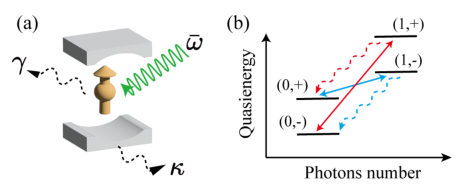
<figcaption class="paper-figure-caption"><b>Fig 1.</b> FIG. 1. The dissipative cavity stabilizes the periodically driven spin. (a) Schematic of the periodically driven system. The spin is driven by an external time-dependent magnetic field that evolves periodically with frequency ω; κ denotes the cavity photon dissipation rate, which is much larger than the spin spontaneous emission rate γ. (b) Two sets of transition- dissipation processes. Here |u+⟩and |u−⟩denote the Floquet excited state and Floquet ground state, respectively; the num- bers 0, 1 denote photon numbers. The red lines depict the Red process: the system and cavity absorb energy from the drive to transition from |u−, 0⟩to |u+, 1⟩, followed by photon dis- sipation to |u+, 0⟩. The...</figcaption>
</figure>
<figure class="paper-figure-card">
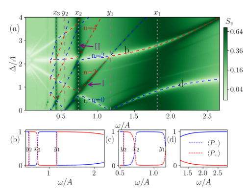
<figcaption class="paper-figure-caption"><b>Fig 2.</b> FIG. 2. (a) Converged stroboscopic entropy of the two-level system as a function of cavity frequency ∆and driving fre- quency ω. Blue dashed lines indicate ∆= δε + nω and red dashed lines indicate ∆= −δε + nω. The dotted gray lines ω/A = xi mark the frequency regions where the two matrix elements M 2 r/b cross (see Fig. 3), predicting high entropy. We classify the high-entropy regions into two categories: those distributed along the resonance conditions (Region I) and those vertical regions near the dotted lines (Region II), as indicated by the purple arrows. (b–d) Fidelities to the Flo- quet ground state (blue) or excited state (red) along the three low-entropy branches labeled (b–d) in...</figcaption>
</figure>
<figure class="paper-figure-card">
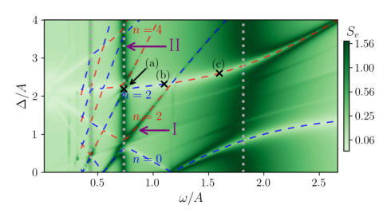
<figcaption class="paper-figure-caption"><b>Fig 3.</b> FIG. 4. Entropy landscape of the five-level (S = 2) system as a function of cavity frequency ∆and driving frequency ω. The cooperation–competition framework of the two-level system persists in the multilevel case: low-entropy branches follow the sideband-resonance conditions, while two types of high- entropy regions appear. In Region I, the leading transition pathway conflicts with the resonant pathway; in Region II, Floquet-zone hybridization makes the competing transition channels comparable. Blue (red) dashed lines denote the Blue (Red) sideband-resonance conditions, ∆= ±δεF + nω. Black arrows indicate the three parameter points (a–c) analyzed in Fig. 5, and purple arrows mark Regions I...</figcaption>
</figure>
<figure class="paper-figure-card">
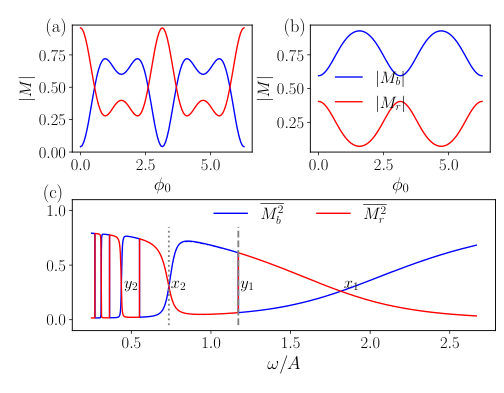
<figcaption class="paper-figure-caption"><b>Fig 4.</b> FIG. 3. Transition matrix elements at different driving fre- quencies. (a,b) Instantaneous transition matrix elements Mb = |⟨u−(t)|σ−|u+(t)⟩| (blue) and Mr = |⟨u+(t)|σ−|u−(t)⟩| (red) as functions of the initial Floquet phase, at driving fre- quencies ω/A = 0.736 (a) and ω/A = 1.17 (b), marked by the dotted and dashed lines in (c), respectively. (c) Period- averaged squared matrix elements M 2 r/b versus driving fre- quency. By comparing with the fidelities in Fig. 2(b-d), the dominant matrix element is found to indicate the stabilized Floquet state at intermediate driving frequencies, ω ∼A (e.g. 0.5 &lt; ω/A &lt; 1.5). The points xi label crossovers of the two matrix elements (predicting...</figcaption>
</figure>
<figure class="paper-figure-card">
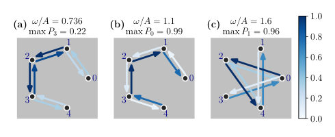
<figcaption class="paper-figure-caption"><b>Fig 5.</b> FIG. 5. (a–c) Time-averaged squared transition matrix el- ements M 2 of the five-level (S = 2) system, visualized as directed graphs, at the three parameter points marked by ar- rows in the entropy landscape of Fig. 4 (ω/A = 0.736, 1.1, 1.6). Each node represents a quasienergy level, numbered in as- cending order within the chosen Floquet zone; a pair of oppo- sitely directed arrows connects every adjacent pair, with the color depth encoding M 2. In panels (b) and (c), one direction dominates at every adjacent pair of the unfolded quasiener- gies, so the transition graph possesses a single terminal node, which becomes the stabilized Floquet eigenstate when the sideband-resonance condition...</figcaption>
</figure>
</div>

<p><strong>Summary.</strong> This paper analyzes the stabilization of Floquet eigenstates in driven quantum systems coupled to a dissipative cavity. It demonstrates that while resonance is necessary, stabilization critically depends on the balance between competing transition pathways (Red vs. Blue). The findings establish a general framework showing that competition can lead to mixed states or complete breakdown, providing deep insight into engineered quantum control.</p>
<p><strong>Why it may be interesting.</strong> This work provides a general, quantitative framework for understanding how engineered dissipation can be used to control and stabilize quantum states in driven systems, a key topic in quantum optics and open quantum systems.</p>
<details>
<summary>Detailed structure</summary>
<p><strong>Main problem.</strong> The paper investigates the conditions under which coupling a periodically driven quantum system to a dissipative cavity can autonomously stabilize a specific Floquet eigenstate.</p>
<p><strong>Main result.</strong> Stabilization is not guaranteed by resonance alone; it critically depends on the interplay between resonance selection and the relative strengths of competing transition channels (Red vs. Blue processes).</p>
<p><strong>Method.</strong> The analysis uses master equations and Floquet theory, examining transition rates derived from symmetry constraints and Fourier decomposition of coupling terms.</p>
<p><strong>Model / system.</strong> The model involves a periodically driven spin system coupled to a dissipative cavity, described by a master equation incorporating cavity decay ($\kappa$) and spin relaxation ($\gamma$).</p>
<p><strong>Key observables.</strong> Von Neumann Entropy ($S_v$) and Stroboscopic Fidelity ($\langle P_{\pm}(nT) 
angle$) are used to diagnose the purity and stability of the Floquet state.</p>
<p><strong>Important parameters / regimes.</strong> Intermediate driving frequencies ($\omega \sim A, \Omega$) are crucial, as these reveal failure modes where the simple resonant picture breaks down.</p>
<p><strong>Assumptions / limitations.</strong> The analysis often relies on approximating the Floquet state as a product state $|u_{\pm}, n
angle$ and analyzing the system in different frequency regimes (high vs. intermediate).</p>
<p><strong>Figures summary.</strong> Figures illustrate the entropy landscape showing low-entropy (stable) white branches versus high-entropy (mixed) dark regions, and fidelity plots confirm stabilization success along specific resonance paths.</p>
<p><strong>Paper structure.</strong> The paper progresses from establishing the general stabilization mechanism via cavity coupling, detailing the roles of Red and Blue processes, and then analyzing how symmetry constraints and frequency regimes dictate whether the stabilization is successful or fails due to competition.</p>
</details>
<details>
<summary>Abstract</summary>
<p>Static coupling to a dissipative cavity has been proposed as a route to autonomously stabilize Floquet eigenstates. The cavity provides an energy-selective relaxation channel: when its photon energy matches a quasienergy difference modulo drive quanta, it mediates transitions between Floquet states, followed by irreversible photon loss. Here, we show that at intermediate driving frequencies, this resonance condition alone is not sufficient for stabilization. Instead, the steady state is controlled by the interplay between resonance selection and the cavity-induced transition strengths between Floquet states, which can either cooperate or compete. This interplay leads to successful stabilization, mixed steady states despite resonance, and complete breakdown near Floquet-zone hybridization. We further show that the same mechanism extends to multilevel spin-S systems, providing a general framework for understanding when static dissipation can reliably stabilize driven quantum states.</p>
</details>
<p><sub><a href="#top">↑ back to top</a></sub></p>

<p><a id="paper-2610.39266"></a></p>
<h3 id="efficient-quantum-optimization-via-dissipative-false-vacuum-decay"><a href="http://arxiv.org/abs/2610.39266v1">Efficient Quantum Optimization via Dissipative False Vacuum Decay</a></h3>
<p><strong>Authors:</strong> Zhi-Hao Huang, Tian-Mu Hu, Shuaifan Cao, Ye Lu, Xiaopeng Li<br>
<strong>Type:</strong> theory · <strong>Category:</strong> other · <strong>PDF:</strong> <a href="https://arxiv.org/pdf/2610.39266v1">https://arxiv.org/pdf/2610.39266v1</a><br>
<strong>Analysis basis:</strong> full PDF text, analyzed in chunks
<strong>Topic relevance:</strong> 🔥 <code>methods for driven-dissipative</code> <strong>4/5</strong> · <code>Tavis-Cummings &amp; cavity-many-emitter</code> <strong>3/5</strong> · <code>analog quantum simulation</code> <strong>3/5</strong> · <code>driven-dissipative phase transition</code> <strong>3/5</strong> · <code>correlated / nonlocal dissipation</code> <strong>2/5</strong> · <code>non-equilibrium universality</code> <strong>2/5</strong> · <code>Keldysh / 2PI / non-Gaussian methods</code> <strong>1/5</strong> · <code>quantum measurements</code> <strong>1/5</strong></p>
<div class="figure-strip-hint">↔ Scroll figures horizontally</div>
<div class="paper-figures-scroll">
<figure class="paper-figure-card">
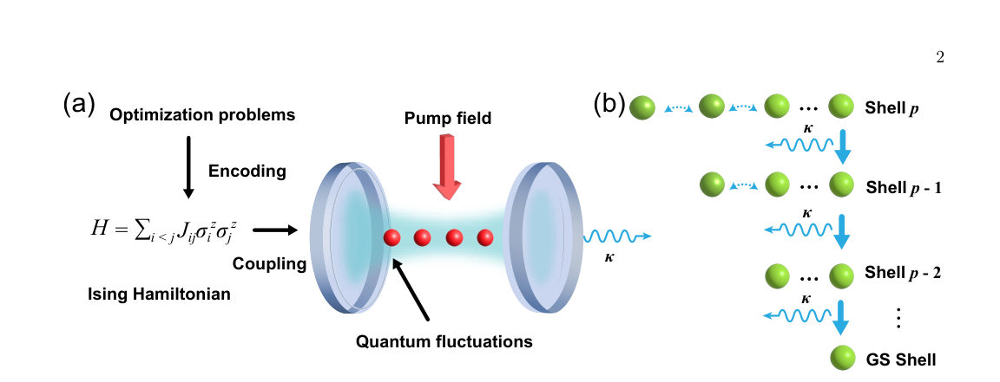
<figcaption class="paper-figure-caption"><b>Fig 1.</b> FIG. 1. Schematic illustration of the cavity-based dissipative quantum solver and its many-body relaxation mechanism. (a) Physical realization. A combinatorial optimization problem is encoded in an atomic-spin Hamiltonian Hproblem, whose ground- state manifold represents the optimal solutions. The spin system is collectively coupled to a lossy single-mode optical cavity. Cavity-field quantum fluctuations mediate coherent spin-photon transitions through the atom-photon interaction, while the effective cavity-mode energy ∆in the rotating frame can be tuned by the pump field. Photon leakage at rate κ provides an irreversible dissipation channel. (b) Energy-shell picture of the dissipative...</figcaption>
</figure>
<figure class="paper-figure-card">
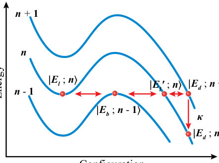
<figcaption class="paper-figure-caption"><b>Fig 2.</b> FIG. 2. Dissipative false vacuum decay in configuration space. The blue curves represent the effective composite en- ergy landscapes Eq(C) = E(C)+q∆in the neighboring cavity- photon sectors q = n −1, n, and n + 1, where C labels a spin configuration. Starting from a composite state |Eℓ; n⟩with n &gt; 0 and a spin configuration at a nonglobal local minimum, population can leave the original basin through the photon- assisted resonant pathway |Eℓ; n⟩↔|Eb; n −1⟩↔|E′ ℓ; n⟩. Here, |Eb⟩is a higher-energy bridge configuration, while |E′ ℓ⟩is a distinct degenerate configuration located outside the original local basin. When Eb −Eℓ= ∆, these com- posite states are resonantly connected, as indicated by...</figcaption>
</figure>
<figure class="paper-figure-card">
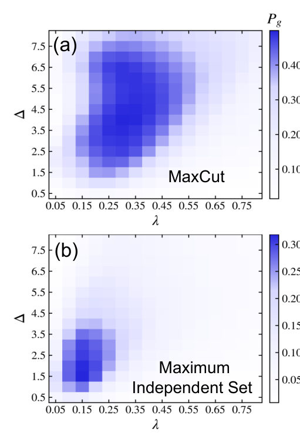
<figcaption class="paper-figure-caption"><b>Fig 3.</b> FIG. 3. Instance-averaged ground-state preparation proba- bility Pg(T = 200) for Max-Cut and MIS on random 3-regular graphs of size N = 10. At each parameter point (∆, λ), Pg is averaged over ten independently generated graph instances. For each problem, the same ten graph instances are used throughout the parameter scan. The atom-photon coupling is time independent throughout the evolution, λ(t) = λ. The photon-loss rate is fixed at κ = 1.0, and the cavity Hilbert space is truncated to dphoton = 4. For Max-Cut, energies and rates are expressed in units of J. For MIS, energies and rates are expressed in units of δ. (a) For Max-Cut with unit edge weights, regions of comparatively high...</figcaption>
</figure>
<figure class="paper-figure-card">
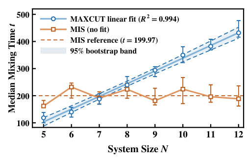
<figcaption class="paper-figure-caption"><b>Fig 4.</b> FIG. 4. Finite-size mixing-time scaling of the cavity-based quantum solver for MaxCut (blue circles) and MIS (orange squares) on random connected graphs with ensemble-averaged degree ⟨k⟩= 3. Each point is the median over 100 in- stances per problem at N = 5, . . . , 12. For each instance, the mixing time is defined as the earliest time T0 satisfying max1≤j≤1000 |Pg(T0 + jδt) −Pg(T0)|/Pg(T0) ≤0.01, where δt = 0.05, corresponding to a subsequent monitoring win- dow of 50 time units. Error bars indicate bootstrap uncer- tainties in the medians. The blue solid line is a linear fit (R2 = 0.994), with shading showing its 95% bootstrap con- fidence band. The dashed line at t = 200 is an MIS refer-...</figcaption>
</figure>
</div>

<p><strong>Summary.</strong> This paper proposes using a cavity-based quantum solver that leverages dissipative false-vacuum decay to solve NP-hard optimization problems like MaxCut and MIS. By coupling the spin system to a lossy cavity, the dissipation acts as a controlled resource, guiding the system efficiently out of local energy minima toward the true ground state. The resulting time complexity estimates are shown to surpass those of standard quantum search methods.</p>
<p><strong>Why it may be interesting.</strong> This work directly applies concepts from open quantum systems and cavity QED (dissipation, cavity coupling) to solve a fundamental problem in quantum computation (optimization), making it highly relevant to AMO physicists studying engineered quantum dynamics.</p>
<details>
<summary>Detailed structure</summary>
<p><strong>Main problem.</strong> Developing efficient quantum solvers for computationally hard, NP-hard combinatorial optimization problems.</p>
<p><strong>Main result.</strong> The authors show that cavity dissipation can be harnessed as a controllable resource to drive the system out of local minima toward the ground state, achieving time complexities better than standard Grover search.</p>
<p><strong>Method.</strong> The mechanism relies on exploiting dissipative false-vacuum decay by coupling the spin system to a lossy optical cavity, which facilitates irreversible population transfer.</p>
<p><strong>Model / system.</strong> The system is modeled using a cavity-based quantum solver described by a Lindblad master equation involving a problem Hamiltonian (Ising-type), a coupling Hamiltonian, and a photon Hamiltonian. The dynamics are governed by the interplay between coherent tunneling and photon loss.</p>
<p><strong>Key observables.</strong> Ground-State Preparation Probability ($P_g(T)$) and median mixing time ($t_{mix}$).</p>
<p><strong>Important parameters / regimes.</strong> Photon leakage rate ($\kappa$), cavity detuning ($\Delta$), and atom-photon coupling strength ($\lambda$).</p>
<p><strong>Assumptions / limitations.</strong> The analysis assumes the interplay between coherent transitions and irreversible photon-loss-induced relaxation, and the time complexity estimate excludes state preparation and readout costs.</p>
<p><strong>Figures summary.</strong> Figures illustrate the physical realization and the energy-shell picture of dissipative dynamics, showing how photon loss drives population flow toward the ground state. Other figures show $P_g(T)$ and $t_{mix}$ scaling for MaxCut and MIS.</p>
<p><strong>Paper structure.</strong> The paper introduces the problem, details the Hamiltonian and the dissipative mechanism (dissipative false-vacuum decay), presents numerical results for MaxCut and MIS, and concludes by estimating favorable time complexities compared to existing quantum search algorithms.</p>
</details>
<details>
<summary>Abstract</summary>
<p>Efficient quantum solvers for computationally hard problems are highly desirable for near-term quantum platforms. Here, we propose a cavity-based dissipative quantum solver for a class of NP-hard combinatorial optimization problems encoded in atomic-spin Hamiltonians with a few discrete single-spin-flip transition energies. We show that the cavity-based quantum solver exploits dissipative false-vacuum decay in configuration space to facilitate escape from metastable local minima in rugged energy landscapes. Numerical studies of MaxCut and Maximum Independent Set identify favorable parameter regions for ground-state preparation. Based on the finite-size scalings of the median mixing time and instance-averaged ground-state preparation probability, we estimate time complexities for our solver that are more favorable than those of standard Grover search. These results highlight cavity dissipation as a controllable resource for quantum optimization.</p>
</details>
<p><sub><a href="#top">↑ back to top</a></sub></p>

<p><a id="paper-2610.38807"></a></p>
<h3 id="generating-multipartite-entanglement-via-structured-bath-engineering"><a href="http://arxiv.org/abs/2610.38807v1">Generating Multipartite Entanglement via Structured-Bath Engineering</a></h3>
<p><strong>Authors:</strong> Baptiste Debecker, Philipp Westhoff, Visal So, Sebastian Paeckel, Guido Pagano, John Martin, Mattia Moroder, François Damanet<br>
<strong>Type:</strong> theory · <strong>Category:</strong> statistical mechanics · <strong>PDF:</strong> <a href="https://arxiv.org/pdf/2610.38807v1">https://arxiv.org/pdf/2610.38807v1</a><br>
<strong>Analysis basis:</strong> full PDF text, analyzed in chunks
<strong>Topic relevance:</strong> 🔥 <code>correlated / nonlocal dissipation</code> <strong>4/5</strong> · 🔥 <code>methods for driven-dissipative</code> <strong>4/5</strong> · <code>analog quantum simulation</code> <strong>3/5</strong> · <code>driven-dissipative phase transition</code> <strong>3/5</strong> · <code>non-equilibrium universality</code> <strong>2/5</strong> · <code>Keldysh / 2PI / non-Gaussian methods</code> <strong>1/5</strong> · <code>quantum measurements</code> <strong>1/5</strong></p>
<div class="figure-strip-hint">↔ Scroll figures horizontally</div>
<div class="paper-figures-scroll">
<figure class="paper-figure-card">
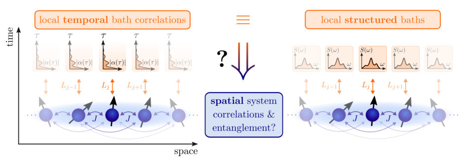
<figcaption class="paper-figure-caption"><b>Fig 1.</b> FIG. 1. Sketch of the central question: Can independent local reservoirs with temporal correlations α(τ) (left) — or, equivalently, with structured spectra S(ω) (right) — generate spatial correlations and even stabilize global multipartite entan- glement in a one-dimensional system? Here, the system consists of an Ising chain in which each spin interacts with its own local reservoir via the coupling operators Lj (j = 1, . . . , N).</figcaption>
</figure>
<figure class="paper-figure-card">
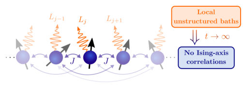
<figcaption class="paper-figure-caption"><b>Fig 2.</b> FIG. 2. No-go theorem: For flat, unstructured baths, the dissipation is in standard Lindblad form. Our no-go result (see Sec. III) applies, forcing the bath to exponentially damp Ising correlations. After an infinite time, all Ising correlations have been washed out.</figcaption>
</figure>
<figure class="paper-figure-card">
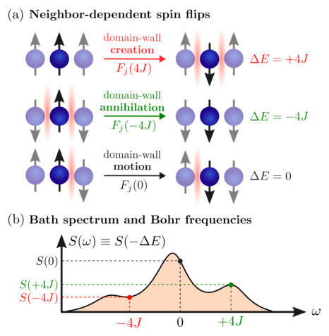
<figcaption class="paper-figure-caption"><b>Fig 3.</b> FIG. 3. Spectrally-resolved spin-flips: (a) Sketch of the three possible neighbor-dependent spin flips associated with jump operators Fj for the nearest-neighbor Ising chain. When the spins enclosing a spin j are aligned with spin j, flipping spin j creates two domain walls and increases the system en- ergy by +4J (red). When the spins enclosing a spin j are aligned with each other but anti-aligned with spin j, flipping spin j destroys the two domain walls and decreases the system energy by −4J (green). When the spins enclosing a spin j are anti-aligned, flipping spin j induces domain wall motion and dephasing without modifying the system energy (black). (b) Bath spectrum S(−ω) sampled at...</figcaption>
</figure>
<figure class="paper-figure-card">
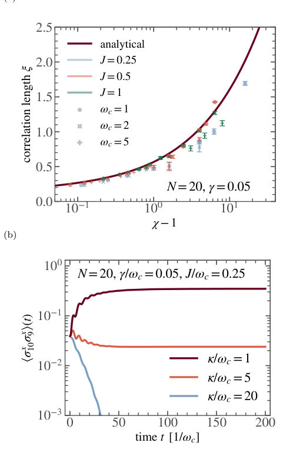
<figcaption class="paper-figure-caption"><b>Fig 4.</b> FIG. 4. Universal behavior of the correlation length and buildup of correlations. (a): Correlation length as a function of χ−1 for different Lorentzian baths and compared with the analytical prediction of Eq. (35). We work in units where γ = 0.05. (b): Example showing the κ-dependence in the buildup of correlations as a function of time. For a very short bath correlation time (large κ), the Ising-axis correlator ⟨σx 10σx 9⟩decays almost exponentially in agreement with our no-go result. However, diminishing κ increases the stabilized Ising-axis correlations. All points were computed with the exact Markovian embedding (38) with Lj = σ− j , for N = 20 sites using the CLIK-MPS method (see...</figcaption>
</figure>
<figure class="paper-figure-card">
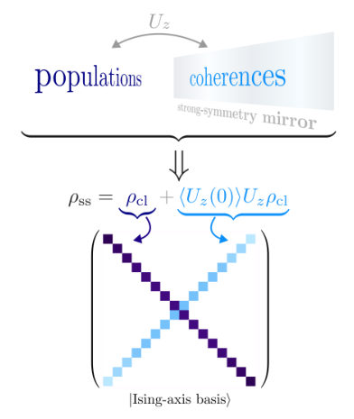
<figcaption class="paper-figure-caption"><b>Fig 5.</b> FIG. 5. Sketch of the role of strong symmetry. The strong symmetry Uz forces the coherences Cs between globally-reversed configurations to mirror the dynamics of the populations Ps in the Ising basis. This mechanism leads to the analytical steady-state manifold (53).</figcaption>
</figure>
</div>

<p><strong>Summary.</strong> This paper shows that global multipartite entanglement can be generated in an Ising spin chain using structured environmental baths, even when the coupling remains locally applied. By exploiting an underlying Abelian strong symmetry, the bath's temporal correlations are converted into classical spatial correlations, which are then promoted to quantum entanglement. This provides a concrete theoretical framework applicable to platforms like trapped ions.</p>
<p><strong>Why it may be interesting.</strong> This work directly addresses the fundamental question of how environmental coupling can generate non-trivial quantum correlations, providing a mechanism that bypasses known limitations in open quantum system theory.</p>
<details>
<summary>Detailed structure</summary>
<p><strong>Main problem.</strong> The central problem is determining if local, independent reservoirs can generate and stabilize genuine multipartite entanglement in an interacting quantum system.</p>
<p><strong>Main result.</strong> Structured baths, by converting temporal bath correlations into classical spatial correlations, allow an Abelian strong symmetry to promote these classical correlations into global quantum multipartite entanglement.</p>
<p><strong>Method.</strong> The analysis uses weak-coupling theory, mapping the dynamics onto an effective Lindbladian, and employs tensor-network simulations (CLIK-MPS) to find the steady state.</p>
<p><strong>Model / system.</strong> The system is an interacting Ising chain of spin-1/2 degrees of freedom, governed by an Ising Hamiltonian. The dynamics are driven by coupling to local, independent reservoirs.</p>
<p><strong>Key observables.</strong> Ising-axis correlators, negativity across bipartitions, and classical distinguishability.</p>
<p><strong>Important parameters / regimes.</strong> The structure of the bath spectrum $S(\omega)$ and the strength of the coupling $J_{ij}$.</p>
<p><strong>Assumptions / limitations.</strong> The mechanism requires harnessing an Abelian strong symmetry, and the initial analysis relies on weak-coupling theory.</p>
<p><strong>Figures summary.</strong> Figure 1 sketches the core question regarding structured baths generating entanglement. Figure 2 illustrates the 'No-go theorem' showing exponential decay of correlations for flat baths.</p>
<p><strong>Paper structure.</strong> The paper first establishes the 'No-go theorem' for flat baths, then introduces structured baths and strong symmetries to overcome this. It derives an exact connection between classical distinguishability and quantum entanglement, and finally proposes engineering the bath spectrum to prepare specific entangled states.</p>
</details>
<details>
<summary>Abstract</summary>
<p>We present how to dissipatively prepare genuinely multipartite-entangled steady states with mutually independent local reservoirs by harnessing an Abelian strong symmetry and temporal bath correlations. In interacting Ising chains, we demonstrate that, for a broad class of system-environment couplings, flat baths exponentially erase Ising-axis correlations. Structured baths overcome this obstruction by converting temporal bath correlations into classical spatial correlations. Strong symmetry then promotes these correlations to the quantum domain, enabling global multipartite entanglement. Within weak-coupling theory, we obtain exact steady states despite the generator's nonquadratic nature: strong symmetry reduces their construction to a classical problem for arbitrary Ising couplings. This reduction reveals an exact connection between classical distinguishability and entanglement. We then show how to engineer the bath spectrum to increase the correlation length and enable the preparation of GHZ-like states from separable initial conditions. We test the mechanism beyond the analytical regime using exact Markovian embeddings and tensor-network simulations. Our approach is particularly suited to superconducting and trapped-ion platforms, and we propose a concrete implementation for the latter using sympathetically cooled motional modes.</p>
</details>
<p><sub><a href="#top">↑ back to top</a></sub></p>

<p><a id="paper-2610.39994"></a></p>
<h3 id="non-bloch-dynamical-quantum-phase-transitions-with-memory"><a href="http://arxiv.org/abs/2610.39994v1">Non-Bloch Dynamical Quantum Phase Transitions with Memory</a></h3>
<p><strong>Authors:</strong> Zhesen Yang, Wei-Wei Yang, Henning Schomerus, Jiangping Hu<br>
<strong>Type:</strong> theory · <strong>Category:</strong> statistical mechanics · <strong>PDF:</strong> <a href="https://arxiv.org/pdf/2610.39994v1">https://arxiv.org/pdf/2610.39994v1</a><br>
<strong>Analysis basis:</strong> full PDF text, analyzed in chunks
<strong>Topic relevance:</strong> 🔥 <code>driven-dissipative phase transition</code> <strong>4/5</strong> · <code>methods for driven-dissipative</code> <strong>3/5</strong> · <code>non-equilibrium universality</code> <strong>3/5</strong> · <code>Keldysh / 2PI / non-Gaussian methods</code> <strong>2/5</strong> · <code>correlated / nonlocal dissipation</code> <strong>2/5</strong> · <code>Frenkel-Kontorova</code> <strong>1/5</strong> · <code>analog quantum simulation</code> <strong>1/5</strong></p>
<div class="figure-strip-hint">↔ Scroll figures horizontally</div>
<div class="paper-figures-scroll">
<figure class="paper-figure-card">
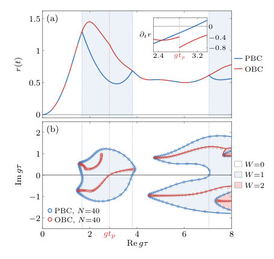
<figcaption class="paper-figure-caption"><b>Fig 1.</b> FIG. 1. Boundary-dependent subspace DQPTs. (a) Dynam- ical free energy r(t) under PBC (blue) and OBC (red, from non-Bloch band theory) in the thermodynamic limit; where the two coincide, the curve alternates in color. Inset: ∂tr (in units of the chain-substrate coupling g) near the non-Bloch DQPT at gtp = 2.83, where the OBC slope jumps. (b) Fisher zeros, i.e., complex times τ with det USS(τ) = 0, in the thermo- dynamic limit (curves) and for N = 40 cells (circles), colored as in (a); black line: real-time axis of (a). Shading in (a) and (b): winding number W (key on the right); dashed lines: PBC (blue) and non-Bloch (red) DQPTs. Numerical details: Appendix A.</figcaption>
</figure>
<figure class="paper-figure-card">
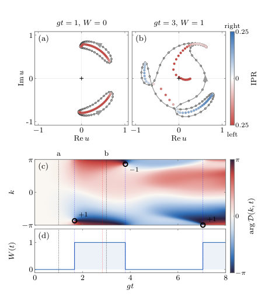
<figcaption class="paper-figure-caption"><b>Fig 2.</b> FIG. 2. Non-Markovian skin effect and dynamical vortices. (a),(b) Eigenvalues u of USS at gt = 1 and 3 under PBC for continuous k (gray curves; arrows: increasing k) and for N = 40 cells under PBC (open circles) and OBC (dots); + marks u = 0. At gt = 3, the two eigenvalues are interchanged after one turn of k and together encircle u = 0 once. Dot color: red (blue) for right eigenvectors centered in the left (right) half of the chain; intensity: their inverse participation ratio. (c) arg D(k, t); circles: vortices labeled by their charges q. (d) Winding number W(t). Dashed lines: the times of (a) and (b) (labels a, b), the PBC DQPTs (blue), and the non-Bloch DQPT (red). Numerical details:...</figcaption>
</figure>
<figure class="paper-figure-card">
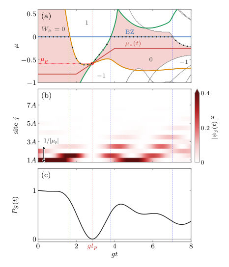
<figcaption class="paper-figure-caption"><b>Fig 3.</b> FIG. 3. Analytic continuation and non-Bloch DQPT. (a) Winding number Wµ (numbers) in the (t, µ) plane, with winding boundaries (gray lines, except the two that bound the plateau in the first interval with W = 1, in orange and green), the zero-winding plateau (shading) closing at (tp, µp) (red circle), the BZ (blue line), and the path µ∗(t) (red curve); dots: rPBC(t) −rOBC(t) at intervals of 0.2/g. (b) Density |ψj(t)|2 of e−iHt|r⟩on the first 8 cells of an open chain with N = 40, where |r⟩is the right eigenvector of USS(tp) with the eigenvalue closest to zero; arrow: localization length 1/|µp|. (c) Survival probability PS(t) of |r⟩on the chain. Dashed lines as in Fig. 1; numerical details:...</figcaption>
</figure>
<figure class="paper-figure-card">
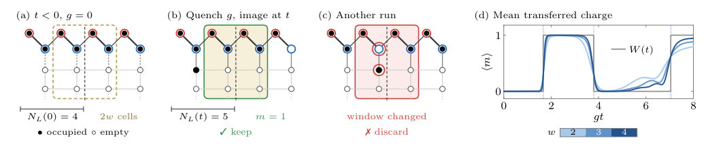
<figcaption class="paper-figure-caption"><b>Fig 4.</b> FIG. 4. Many-body detection of the winding number. (a)–(c) Protocol. A filled chain and an empty substrate (a) evolve after g is switched on. A snapshot taken at time t is kept if its window of 2w cells returns to the initial pattern (b) and discarded otherwise (c); for each kept snapshot, the transferred charge m = NL(t) −NL(0) is recorded. Black disks mark occupied sites, and red (blue) circles the A (B) sites; in (c), large red rings mark the sites that differ from the initial pattern. (d) Conditional mean ⟨m⟩for w = 2, 3, 4, compared with W(t); dashed lines: PBC DQPTs. Open chain with N = 30 cells (Sec. S5 of the Supplemental Material).</figcaption>
</figure>
<figure class="paper-figure-card">
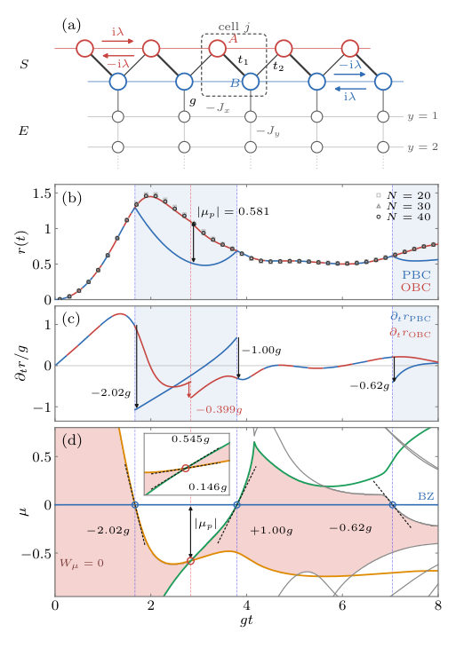
<figcaption class="paper-figure-caption"><b>Fig 5.</b> FIG. 5. Lattice model and dynamical free energy of open chains. (a) Bonds of H, with the amplitude ⟨i|H|j⟩of a hop j →i along each arrow; dashed box: cell j. (b) r(t) for N →∞under PBC and OBC [Eqs. (9) and (11)], colored as in Fig. 1(a), and for open chains (symbols); shading: W(t) = 1; arrow: the gap |µp| at tp [Eq. (14)]. (c) Slopes of the N →∞curves in (b); arrows: jumps predicted by the tangent slopes in (d). (d) Winding boundaries near the BZ (blue line), colored as in Fig. 3(a), and the zero-winding plateau (shading), which closes at (tp, µp) (red circle); dashed: tangents where a winding boundary crosses the BZ (circles) and at (tp, µp) (inset). Vertical lines as in Fig. 1.</figcaption>
</figure>
</div>

<p><strong>Summary.</strong> This work investigates non-Bloch Dynamical Quantum Phase Transitions in open quantum chains coupled to a substrate with memory. By utilizing the winding number, the authors show that the boundary conditions fundamentally alter the system's dynamics when the winding number is non-zero. This establishes a dynamical bulk-boundary correspondence, linking non-Hermitian topology to the dynamics of Hermitian systems.</p>
<p><strong>Why it may be interesting.</strong> The connection between topological invariants (winding number) and non-equilibrium dynamics (DQPTs) in open systems is highly relevant for understanding boundary effects in quantum materials and open quantum systems.</p>
<details>
<summary>Detailed structure</summary>
<p><strong>Main problem.</strong> The paper identifies and characterizes non-Bloch Dynamical Quantum Phase Transitions (DQPTs) that occur specifically in open quantum chains, contrasting them with standard Bloch-momentum dependent transitions.</p>
<p><strong>Main result.</strong> The existence of non-zero winding numbers ($W 
eq 0$) causes the dynamical free energy calculated for open chains to differ significantly from that of periodic chains, revealing a dynamical bulk-boundary correspondence.</p>
<p><strong>Method.</strong> The analysis relies on calculating the winding number ($W$) via the argument principle applied to the projected propagator, and relating the open boundary energy to the periodic one via analytic continuation to complex momenta.</p>
<p><strong>Model / system.</strong> The system is a Hermitian quantum chain coupled to a simple substrate, resulting in non-Markovian dynamics due to the substrate's memory. The dynamics are analyzed using block Hamiltonian diagonalization and the concept of the dynamical free energy.</p>
<p><strong>Key observables.</strong> Dynamical free energy ($r(t)$), winding number ($W$), and the difference between OBC and PBC free energies.</p>
<p><strong>Important parameters / regimes.</strong> The winding number $W$, the time $t$, and the complex momentum $\mu$.</p>
<p><strong>Assumptions / limitations.</strong> The analysis assumes the substrate memory can be treated exactly, and that the difference between OBC and PBC can be mapped via analytic continuation.</p>
<p><strong>Figures summary.</strong> Figures illustrate the difference in dynamical free energy between PBC and OBC, showing how the winding number dictates this difference, and visualizing the winding number contours in the time-momentum plane.</p>
<p><strong>Paper structure.</strong> The paper progresses by first defining the system and the DQPT concept, then introducing the winding number as the diagnostic tool, deriving the relationship between OBC and PBC energies, and finally demonstrating the physical consequences of $W 
eq 0$ via the dynamical bulk-boundary correspondence.</p>
</details>
<details>
<summary>Abstract</summary>
<p>Dynamical quantum phase transitions (DQPTs) of periodic chains are determined by real Bloch momenta. We identify non-Bloch DQPTs, which occur only in open chains and are determined by complex momenta instead. They arise in a Hermitian chain coupled to a simple substrate, whose memory is treated exactly, and originate from the point-gap winding number $W$ of the projected propagator: for $W\neq0$, open boundaries change both the dynamical free energy and the critical times, even in the thermodynamic limit. We find that both follow from an analytic continuation to complex momenta, and show that $W$ can be measured by particle counting. This reveals a dynamical bulk-boundary correspondence, in which non-Hermitian topology emerges from Hermitian dynamics with memory.</p>
</details>
<p><sub><a href="#top">↑ back to top</a></sub></p>

<p><a id="paper-2610.39670"></a></p>
<h3 id="error-corrected-quantum-optimization-via-rydberg-atom-array-embeddings"><a href="http://arxiv.org/abs/2610.39670v1">Error-Corrected Quantum Optimization via Rydberg Atom Array Embeddings</a></h3>
<p><strong>Authors:</strong> Andrew Byun, Berend Klaver, Arinjoy De, Pedro Ildefonso, Davit Khachatryan, Alexei Bylinskii, Michael Schuler, Wolfgang Lechner<br>
<strong>Type:</strong> both · <strong>Category:</strong> quantum information and computing · <strong>PDF:</strong> <a href="https://arxiv.org/pdf/2610.39670v1">https://arxiv.org/pdf/2610.39670v1</a><br>
<strong>Analysis basis:</strong> full PDF text, analyzed in chunks
<strong>Topic relevance:</strong> 🔥 <code>QC/QI experiment</code> <strong>4/5</strong> · 🔥 <code>Rydberg arrays</code> <strong>4/5</strong> · <code>analog quantum simulation</code> <strong>3/5</strong> · <code>quantum measurements</code> <strong>1/5</strong></p>
<div class="figure-strip-hint">↔ Scroll figures horizontally</div>
<div class="paper-figures-scroll">
<figure class="paper-figure-card">
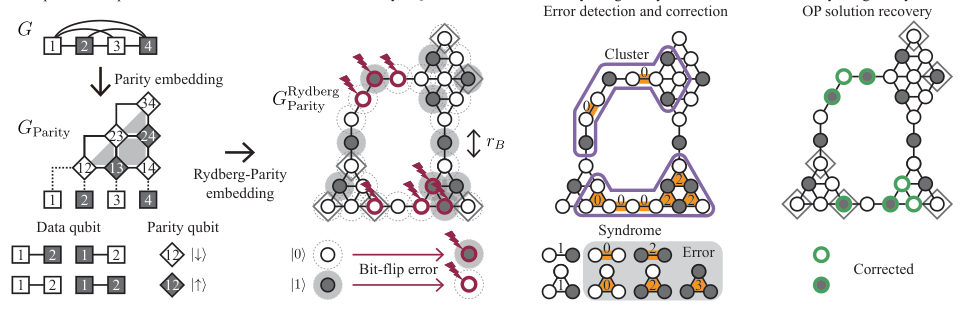
<figcaption class="paper-figure-caption"><b>Fig 1.</b> FIG. 1. Overview of error-corrected quantum optimization via Rydberg atom array embeddings. (a) An optimization problem (OP) on a logical graph G (here, a QUBO instance) is first mapped to the parity encoding GParity. Squares denote data qubits and diamonds denote parity qubits, with empty (filled) markers indicating the qubit state |↓⟩(|↑⟩). Gray triangles and squares represent three- and four-body parity constraints, respectively. (b) The parity-encoded problem is embedded into a Rydberg-blockade-based atomic layout GRydberg Parity , yielding the Rydberg-Parity embedding. Adiabatic quantum computing (AQC) is then performed on this layout. Empty (filled) circles correspond to physical...</figcaption>
</figure>
<figure class="paper-figure-card">
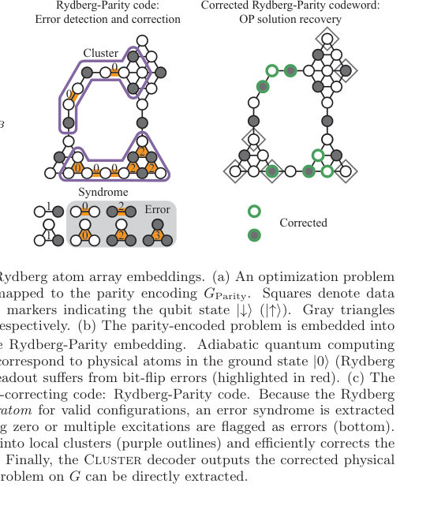
<figcaption class="paper-figure-caption"><b>Fig 2.</b> Figure 1 summarizes our full workflow for error- corrected quantum optimization with Rydberg gadget embeddings. An optimization problem is first mapped to the physical Rydberg-Parity embedding on an array of atoms via an intermediate parity mapping [Fig. 1(a, b)]. Then, noisy AQC is performed on this Rydberg- Parity layout [Fig. 1(b)], typically yielding a noisy bit- string. Interpreting the atomic layout as a Rydberg- Parity code, we extract the error syndrome, apply the Cluster decoder to correct errors, and recover a valid bitstring [Fig. 1(c)]. Finally, the solution of the origi- nal OP is directly obtained from the corrected bitstring [Fig. 1(d)].</figcaption>
</figure>
<figure class="paper-figure-card">

<figcaption class="paper-figure-caption"><b>Fig 3.</b> FIG. 2. Gadget-based Rydberg-Parity embedding. (a) The physical layout GRydberg Parity is constructed through the amalga- mation of two fundamental gadgets [26]: (b) The LINK gad- get, which copies the bit from one end to the other, nA = nA′; (c) The 3BODY gadget, which satisfies the parity constraint: nA ⊕nB ⊕nAB = 1. Amalgamation glues gadgets together at shared atoms (e.g., atom A), thereby summing their local detunings ∆i (indicated by the circle colors). The smaller con- figurations shown in (b) and (c) enumerate all valid MWIS bitstrings of the corresponding gadgets. (d, e) LINK and 3BODY gadgets can themselves be interpreted as an amalga- mation of dimer and trimer superatoms. The...</figcaption>
</figure>
<figure class="paper-figure-card">

<figcaption class="paper-figure-caption"><b>Fig 4.</b> FIG. 3. Cluster decoder. (a) The iterative decoding algorithm consists of four stages: (0) Initialize: Initial clusters Γi (the active regions of interest) are defined by grouping adjacent superatom sets (sets of atoms belonging to the same superatom) that are flagged by the syndrome (highlighted in orange). (1) Resolve: The decoder attempts to locally correct the errors in each cluster by finding a unique bitstring configuration using the lookup-table search detailed in (b). All atoms outside the cluster are frozen, whereas the atoms inside the cluster remain unfrozen and are outlined in orange. If the Resolve step fails (e.g., Γ2 and Γ3), i.e., no unique valid configuration is found, the...</figcaption>
</figure>
<figure class="paper-figure-card">

<figcaption class="paper-figure-caption"><b>Fig 5.</b> FIG. 4. Logical error rate (LER) under i.i.d. bit-flip noise for OPs on (a) complete graphs G = KN and (b) bipartite graphs G = KN,N for varying problem sizes N (indicated by color). The crossing of the curves reveals an error thresh- old pth, below which the LER decreases monotonically as the system size N increases. From the crossing of the curves cor- responding to the two largest considered graph sizes, we es- timate pth ≈0.275 for complete graphs (a), and pth ≈0.263 for bipartite graphs (b). The left side of each panel illustrates the mapping from the OP, through the parity-encoded prob- lem, to the Rydberg-Parity embedding. Increasing problem sizes N are represented by progressively...</figcaption>
</figure>
</div>

<p><strong>Summary.</strong> This work demonstrates that embedding general optimization problems onto Rydberg atom arrays not only maps the problem but also inherently builds in a classical error-correcting code. By utilizing this structure and a specialized Cluster decoder, the authors achieve high fidelity in recovering optimal solutions despite hardware noise.</p>
<p><strong>Why it may be interesting.</strong> It provides a concrete, physical realization of error correction being an intrinsic byproduct of the computational embedding structure, which is a major goal in scalable quantum computation.</p>
<details>
<summary>Detailed structure</summary>
<p><strong>Main problem.</strong> The paper addresses the challenge of solving general combinatorial optimization problems (OPs) on complex topologies using Rydberg atom arrays, which requires embedding techniques beyond the native maximum independent set problem.</p>
<p><strong>Main result.</strong> The embedding structure itself is shown to naturally form a classical error-correcting code, allowing the use of a tailored Cluster decoder to achieve an error threshold of $p_{	ext{th}}\gtrsim26\%$ and recover solutions experimentally.</p>
<p><strong>Method.</strong> The approach combines gadget-based embedding (e.g., Parity Architecture) to map OPs to the hardware, followed by Adiabatic Quantum Computation (AQC) and error correction using a specialized Cluster decoder.</p>
<p><strong>Model / system.</strong> The physical system is a Rydberg atom array utilizing the Rydberg blockade mechanism. The Hamiltonian involves mixing ($\hat{H}_{mix}$) and cost ($\hat{H}_{cost}$) terms, and the computation relies on mapping the problem onto a Unit-Distance-Weighted Maximum Independent Set (UD-MWIS) problem on an expanded graph.</p>
<p><strong>Key observables.</strong> Error threshold ($p_{	ext{th}} \gtrsim 26\%$), average success rate ($\gtrsim 8\%$) for recovering exact solutions on the QuEra Aquila QPU.</p>
<p><strong>Important parameters / regimes.</strong> Error threshold, Rabi frequency ($\Omega$), detuning ($\Delta$), and the specific structure of the gadgets (LINK, 3BODY).</p>
<p><strong>Assumptions / limitations.</strong> The primary assumption is that the redundancy introduced by the embedding gadgets provides sufficient structure to act as a classical error-correcting code, which is strictly nonlinear.</p>
<p><strong>Figures summary.</strong> Figure 1 illustrates the full workflow: OP $   o$ Parity Encoding $    o$ Rydberg-Parity Embedding $   o$ Error Syndrome Extraction $  o$ OP Solution Recovery. Other figures detail the state preparation pulse and gadget performance.</p>
<p><strong>Paper structure.</strong> The paper first establishes the need for embedding beyond native graph constraints. It then details the construction of the Rydberg-Parity embedding, which simultaneously encodes the problem and provides error correction. The methodology involves AQC, error syndrome extraction via local constraints, and decoding using the Cluster decoder.</p>
</details>
<details>
<summary>Abstract</summary>
<p>Rydberg atom quantum optimizers naturally encode the maximum independent set problem on geometric graphs. However, to solve general combinatorial optimization problems on more complex topologies, an embedding is required to overcome the limited-range native interactions. Such embeddings use gadgets, specific arrangements of atoms, which inevitably introduce ancillary atoms. Here, we show that this apparent overhead instead provides an intrinsic resource for error correction. Specifically, we demonstrate that the Parity Architecture-based Rydberg embedding naturally forms a classical error-correcting code, a principle that extends to other Rydberg blockade-based embeddings. Within superatom substructures, exact Rydberg-excitation-number constraints provide local error syndromes at no additional hardware cost and give rise to a strictly nonlinear code. To correct bit-flip errors, we introduce the precisely tailored Cluster decoder, which exploits these local constraints and the underlying gadget structure. Numerically, this approach achieves an error threshold of $p_{\text{th}}\gtrsim26 \%$ across different layout geometries. Experimentally, on the QuEra Aquila QPU, the Cluster decoder recovers exact optimization solutions with an average success rate of $\gtrsim8\%$ for systems of up to 107 atoms, even when bare hardware and standard greedy post-processing find none. A Rydberg atom array embedding is therefore not merely a hardware mapping of an optimization problem, but a co-designed architecture for quantum optimization in which embedding, computation, and error correction emerge from the same physical structure.</p>
</details>
<p><sub><a href="#top">↑ back to top</a></sub></p>

<p><a id="paper-2610.39350"></a></p>
<h3 id="provably-efficient-experimental-classification-of-quantum-data-with-quantum-kernels"><a href="http://arxiv.org/abs/2610.39350v1">Provably efficient experimental classification of quantum data with quantum kernels</a></h3>
<p><strong>Authors:</strong> Keitaro Anai, Akimoto Nakayama, Shintaro Ooka, Hiroko Tomoda, Yuto Morohoshi, Yohji Chin, Shigehito Miki, Masahiro Yabuno, Hirotaka Terai, Peter van Loock, Kosuke Mitarai, Shuntaro Takeda<br>
<strong>Type:</strong> both · <strong>Category:</strong> quantum information and computing · <strong>PDF:</strong> <a href="https://arxiv.org/pdf/2610.39350v1">https://arxiv.org/pdf/2610.39350v1</a><br>
<strong>Analysis basis:</strong> full PDF text, analyzed in chunks
<strong>Topic relevance:</strong> 🔥 <code>QC/QI experiment</code> <strong>4/5</strong> · <code>quantum measurements</code> <strong>3/5</strong> · <code>quantum optics experiment</code> <strong>3/5</strong> · <code>analog quantum simulation</code> <strong>2/5</strong></p>
<div class="figure-strip-hint">↔ Scroll figures horizontally</div>
<div class="paper-figures-scroll">
<figure class="paper-figure-card">

<figcaption class="paper-figure-caption"><b>Fig 1.</b> FIG. 1. Conceptual overview of the proposed quantum-state classification framework. Our frame- work is designed to address diverse quantum-state classifica- tion tasks motivated by questions in quantum science, such as determining whether a state is entangled, identifying phases of matter, and detecting faulty outputs from quantum devices (left). Across these tasks, we assess the structure of quan- tum data using a common measure based on a quantum ker- nel, which quantifies similarity between states (center). For data satisfying our sufficient conditions, the same quantum kernel method enables accurate learning and prediction with numbers of training states and measurement shots that scale...</figcaption>
</figure>
<figure class="paper-figure-card">

<figcaption class="paper-figure-caption"><b>Fig 2.</b> FIG. 2. Numerical simulation of the mode-number dependence of classification accuracy in stellar-rank- based quantum data classification. Blue, red, green, and orange lines correspond to results obtained using the fidelity kernel as a linear baseline, quantum RBF kernel, non-QML methods with random-candidate testing, and non-QML meth- ods with optimized-candidate testing, respectively. Here, as the non-QML method, we adopt the approach proposed in Ref. [18], which is based on a witness called stellar robustness (see Supplementary Sec. D for the detailed procedure). For the quantum-kernel methods, the horizontal axis denotes the number of labeled quantum data used to train the classifier,...</figcaption>
</figure>
<figure class="paper-figure-card">

<figcaption class="paper-figure-caption"><b>Fig 3.</b> FIG. 3. Fidelity values | ⟨ψj|ψi⟩|2 between quantum data. The horizontal and vertical axes in Fig. 3 represent the index of the 180 quantum data. In a–c, the colormap represents the fidelity values between quantum data with the corresponding indices; in d, it represents the element-wise difference between a and b. The rows and columns of the matrix are ordered identically. The data are grouped according to their class label, with stellar-rank-zero states placed first and stellar-rank-one states placed second. See Supplementary Sec. F for details on the ordering. a. Experimental fidelities. Each element’s standard error is approximately 0.004, determined via bootstrap resampling. b....</figcaption>
</figure>
<figure class="paper-figure-card">

<figcaption class="paper-figure-caption"><b>Fig 4.</b> FIG. 4. Classification accuracy versus training dataset size. Markers represent experimentally measured accura- cies (exp.), solid lines indicate simulated theoretical accura- cies including experimental imperfections (realistic sim.), and dashed lines indicate simulated theoretical accuracies without experimental imperfections (ideal sim.). Blue, red, and green correspond to results obtained using the quantum fidelity ker- nel, quantum RBF kernel, and non-QML methods with ran- dom candidates, respectively. The shaded area represents the standard error (see Supplementary Sec. A for details).</figcaption>
</figure>
<figure class="paper-figure-card">

<figcaption class="paper-figure-caption"><b>Fig 5.</b> FIG. 5. Experimental measurement of quantum kernel entries. a, Conceptual quantum circuit for quantum kernel measurement. Quantum data |ψi⟩are generated and the fidelities | ⟨ψj|ψi⟩|2 of quantum data are measured by projection onto quantum data |ψj⟩. b, Detailed quantum circuit implementation. Squeezed vacuum states or squeezed single-photon states are generated, depending on the measurement result of the photon detector. For the projection onto ⟨ψj| = ⟨nj| ˆG† j, we implement the measurement-induced operation ˆG† j with an ancillary state from OPO-2, and the projection onto ⟨nj|. Disp., displacement operation; OPO, optical parametric oscillator.</figcaption>
</figure>
</div>

<p><strong>Summary.</strong> This paper presents a theory-guided framework for efficiently classifying quantum states using quantum kernel methods, bypassing the need for exponentially complex measurements. The authors theoretically prove polynomial resource scaling and experimentally demonstrate this scheme by classifying the stellar rank of continuous-variable quantum states using a programmable photonic processor.</p>
<p><strong>Why it may be interesting.</strong> The work provides a concrete, experimentally validated blueprint for implementing quantum machine learning tasks on current photonic hardware, moving beyond purely theoretical bounds by addressing resource scaling.</p>
<details>
<summary>Detailed structure</summary>
<p><strong>Main problem.</strong> The paper addresses the challenge of efficiently classifying quantum states without requiring an exponentially large number of measurements, a necessity for practical quantum machine learning.</p>
<p><strong>Main result.</strong> They establish a theory-guided framework guaranteeing classification accuracy with a number of measurements polynomial in system size, which was experimentally validated on a photonic processor.</p>
<p><strong>Method.</strong> The core method uses quantum kernel methods, specifically the quantum Radial Basis Function (RBF) kernel derived from quantum fidelities, framed as a Support-Vector-Machine classifier.</p>
<p><strong>Model / system.</strong> The experiments are performed on a programmable photonic processor capable of generating and processing continuous-variable (CV) quantum states, specifically classifying single-mode states based on their stellar rank (a measure of non-Gaussianity).</p>
<p><strong>Key observables.</strong> Classification accuracy, quantum fidelity ($|\langle\psi_j|\psi_i
angle|^2$), and the stellar rank of the quantum states.</p>
<p><strong>Important parameters / regimes.</strong> The theoretical guarantee relies on the margin $\eta$ being bounded below by an inverse polynomial in system size $m$. Experimentally, the setup uses specific squeezing levels and measurement parameters ($\alpha, eta$).</p>
<p><strong>Assumptions / limitations.</strong> The theoretical guarantee assumes the class does not collapse onto its representatives. Experimentally, the method is shown to be robust despite experimental imperfections.</p>
<p><strong>Figures summary.</strong> Figures illustrate the conceptual framework (Fig 1), the mode-number dependence of classification accuracy comparing different kernels (Fig 2), measured fidelities (Fig 3), and the comparison of classification accuracy vs. training set size (Fig 4).</p>
<p><strong>Paper structure.</strong> The paper first theoretically establishes the framework linking learning efficiency to data structure, deriving polynomial resource bounds. It then applies this to the resource problem of stellar rank classification in CV states. The latter part details the experimental implementation, including the measurement procedures for estimating quantum fidelities using homodyne detection on a photonic platform.</p>
</details>
<details>
<summary>Abstract</summary>
<p>Analyzing quantum systems is essential for quantum information processing, but can require exponentially many measurements without exploiting the structure of the system or task. Quantum machine learning offers a promising way to reduce this cost by learning from quantum data. Here, we theoretically establish a framework for efficient quantum-state classification and experimentally demonstrate the resulting scheme on a programmable photonic processor. Our analysis links learning efficiency to the structure of quantum data, without relying on a physical description tailored to each task. We derive sufficient conditions for accurate classification with a number of measurements polynomial in system size. We apply this guarantee to a resource problem in continuous-variable (CV) quantum computing: classifying stellar rank, a measure of non-Gaussianity. Experimentally, we implement the classification of single-mode CV quantum states with stellar rank zero and one. This is enabled by developing a programmable CV photonic processor capable of preparing and processing diverse Gaussian and non-Gaussian states and performing virtual projection onto such states, going beyond the Gaussian-only capabilities of most existing photonic platforms. The experiment demonstrates accurate classification despite experimental imperfections. Our results establish a theory-guided and experimentally validated framework for quantum-state classification that can be implemented on quantum devices available today.</p>
</details>
<p><sub><a href="#top">↑ back to top</a></sub></p>

<p><a id="paper-2610.40329"></a></p>
<h3 id="high-fidelity-universal-quantum-gates-in-a-cryogenic-atom-array"><a href="http://arxiv.org/abs/2610.40329v1">High-Fidelity Universal Quantum Gates in a Cryogenic Atom Array</a></h3>
<p><strong>Authors:</strong> Junlan Jin, Donghyuk Seo, Yue Shi, Yukai Lu, Jeff D. Thompson, Waseem S. Bakr<br>
<strong>Type:</strong> experiment · <strong>Category:</strong> other · <strong>PDF:</strong> <a href="https://arxiv.org/pdf/2610.40329v1">https://arxiv.org/pdf/2610.40329v1</a><br>
<strong>Analysis basis:</strong> full PDF text, analyzed in chunks
<strong>Topic relevance:</strong> 🔥 <code>QC/QI experiment</code> <strong>4/5</strong> · 🔥 <code>Rydberg arrays</code> <strong>4/5</strong> · <code>analog quantum simulation</code> <strong>2/5</strong> · <code>quantum optics experiment</code> <strong>1/5</strong></p>
<div class="figure-strip-hint">↔ Scroll figures horizontally</div>
<div class="paper-figures-scroll">
<figure class="paper-figure-card">

<figcaption class="paper-figure-caption"><b>Fig 1.</b> FIG. 1. Experimental setup and state preparation. (a) Simplified schematic of the experimental setup, showing the 4 K and 35 K radiation shields enclosed within a vacuum chamber, superconducting coils, electrodes, aspheric lenses, and laser beam paths. Inset: a 7 × 2 atom array, with interpair and intrapair spacings of 12 µm and 3.2 µm, respectively, is located at the focus of the lenses. The tweezer trapping light is at the cesium magic wavelength of 936 nm, where the 6S1/2 and 6P3/2 states have similar dynamic polarizabilities. (b) Energy-level diagram of 133Cs showing the relevant transitions. The qubit is encoded in the hyperfine clock states |0⟩= |3, 0⟩and |1⟩= |4, 0⟩. The Raman...</figcaption>
</figure>
<figure class="paper-figure-card">

<figcaption class="paper-figure-caption"><b>Fig 2.</b> FIG. 2. Coherent control of the clock-state qubit. (a) Raman- driven clock-state Rabi oscillations with a Rabi frequency of 2π × 349.8(7) kHz. (b) Ramsey measurement. Orange points and the solid line show the array-averaged data and a Gaus- sian fit with a 1/e decay time of 1.92(4) ms. The shaded decay envelope corresponds to T ∗ 2 = 3.14(2) ms, the average coher- ence time extracted from individual-site fits. (c) Randomized benchmarking of single-qubit gates. An exponential fit with a baseline of 1/2 yields an average Clifford gate fidelity of 99.970(2)%. Inset: Randomized benchmarking circuit. Cr, Cf, and n denote a random Clifford gate, the final recovery gate, and the number of Clifford...</figcaption>
</figure>
<figure class="paper-figure-card">

<figcaption class="paper-figure-caption"><b>Fig 3.</b> FIG. 4. High-fidelity time-optimal CZ gate using Rydberg P state interactions. (a) Interaction energies of relevant Rydberg pair states versus interatomic separation R at θ = 90◦(left) and versus θ at the experimental separation of R = 3.2 µm (right), calculated using ARC [54]. The colors of the solid lines indicate the coupling strength between |1r⟩and the pair states. (b) Amplitude (purple) and phase (light blue) profiles of the time-optimal CZ gate. (c) Echo randomized benchmarking and (d) symmetric stabilizer benchmarking of the CZ gate. Exponential fits with zero offset yield fidelities of 99.76(8)% and 99.78(10)%, respectively. Insets: Circuit diagrams. n denotes the number of CZ...</figcaption>
</figure>
</div>

<p><strong>Summary.</strong> This paper reports the successful demonstration of a universal quantum gate set using $^{133}	ext{Cs}$ atoms trapped in an optical tweezer array operating at cryogenic temperatures. By suppressing blackbody radiation effects, the authors achieved state-of-the-art gate fidelities, establishing a clear pathway to fault-tolerant quantum computation beyond current room-temperature limitations.</p>
<p><strong>Why it may be interesting.</strong> This work is highly relevant as it pushes the boundaries of quantum computation hardware by demonstrating how cryogenic cooling can fundamentally suppress decoherence mechanisms (like BBR) that limit gate fidelity in neutral atom platforms.</p>
<details>
<summary>Detailed structure</summary>
<p><strong>Main problem.</strong> The primary challenge addressed is achieving high-fidelity universal quantum gates in neutral atom arrays while mitigating decoherence caused by blackbody radiation (BBR) in room-temperature environments.</p>
<p><strong>Main result.</strong> The authors demonstrated a universal gate set in a cryogenic $^{133}	ext{Cs}$ atom array, achieving single-qubit gate fidelity of 99.970(2)% and two-qubit entangling-gate fidelity of 99.76(8)%, surpassing room-temperature limits.</p>
<p><strong>Method.</strong> The experiment utilizes optical tweezer arrays and cryogenic cooling to suppress BBR-induced transitions. Gate operations are performed using direct single-photon coupling to Rydberg P states for the entangling gate.</p>
<p><strong>Model / system.</strong> The physical system is a trapped array of $^{133}	ext{Cs}$ atoms. Qubits are encoded in hyperfine clock states, and the entangling gate relies on controlled Rydberg interactions mediated by single-photon excitation.</p>
<p><strong>Key observables.</strong> Single-qubit gate fidelity (99.970(2)%), raw two-qubit entangling-gate fidelity (99.76(8)%), and coherence times ($T_2^*$).</p>
<p><strong>Important parameters / regimes.</strong> Cryogenic temperatures (suppressing BBR), Rabi frequency ($2\pi 	imes 4.3$ MHz), and the fundamental error contribution from Rydberg decay (below $3	imes10^{-4}$).</p>
<p><strong>Assumptions / limitations.</strong> The error model suggests that atomic motion, rather than Rydberg decay, is the dominant source of infidelity, pointing to improved cooling as the primary path for fidelity enhancement.</p>
<p><strong>Figures summary.</strong> Figures illustrate the experimental setup (cryogenic shields), energy level diagrams for $^{133}	ext{Cs}$, and detailed measurements of Rabi oscillations, Ramsey decay, and gate fidelity using randomized benchmarking.</p>
<p><strong>Paper structure.</strong> The paper details the platform (cryogenic atom arrays), describes the single-qubit control using Raman transitions, and then presents the implementation and benchmarking of the two-qubit entangling gate using single-photon coupling to Rydberg states.</p>
</details>
<details>
<summary>Abstract</summary>
<p>Neutral atoms in optical tweezer arrays have emerged as a leading platform for quantum information processing. The fidelity of entangling gates mediated by Rydberg interactions has improved rapidly and is increasingly constrained by blackbody-radiation-induced transitions, which shorten Rydberg lifetimes and create contaminant states that can cause correlated errors. Cryogenic environments can suppress these transition rates by more than an order of magnitude. However, realizing a universal gate set in such an environment has remained an outstanding challenge. Here, we demonstrate a universal quantum gate set in a cryogenic $^{133}$Cs atom array, with a single-qubit gate fidelity of 99.970(2)% and a raw two-qubit entangling-gate fidelity of 99.76(8)%, within the range of leading room-temperature implementations. The entangling gate uses direct single-photon coupling between the electronic ground state and a Rydberg $P$ state, avoiding scattering and light shifts associated with two-photon coupling. The gate operates at a modest Rabi frequency of $2π\times4.3$ MHz. The measured fidelity agrees with our error model dominated by atomic motion, indicating a straightforward route to higher fidelity through improved cooling, while the fundamental error contribution from Rydberg decay is below $3\times10^{-4}$. These results establish a path to entangling-gate fidelities substantially beyond the current state of the art through cryogenic suppression of Rydberg decay, reducing the overhead for fault-tolerant computation.</p>
</details>
<p><sub><a href="#top">↑ back to top</a></sub></p>

<p><a id="paper-2610.39022"></a></p>
<h3 id="high-bandwidth-heterodyne-sensing-with-bulk-nv-diamond"><a href="http://arxiv.org/abs/2610.39022v1">High bandwidth heterodyne sensing with bulk NV diamond</a></h3>
<p><strong>Authors:</strong> H. A. M. Taylor, J. P. Duff, L. B. Miller, A. Tritt, M. S. Oldfield, K. Helmerson, M. S. J. Barson<br>
<strong>Type:</strong> both · <strong>Category:</strong> other · <strong>PDF:</strong> <a href="https://arxiv.org/pdf/2610.39022v1">https://arxiv.org/pdf/2610.39022v1</a><br>
<strong>Analysis basis:</strong> full PDF text, analyzed in chunks
<strong>Topic relevance:</strong> 🔥 <code>quantum optics experiment</code> <strong>4/5</strong> · <code>interference shaping light</code> <strong>3/5</strong> · <code>quantum measurements</code> <strong>2/5</strong> · <code>QC/QI experiment</code> <strong>1/5</strong></p>
<div class="figure-strip-hint">↔ Scroll figures horizontally</div>
<div class="paper-figures-scroll">
<figure class="paper-figure-card">

<figcaption class="paper-figure-caption"><b>Fig 1.</b> Figure 1. Principles of conventional and heterodyne ODMR in NV centres. (a) During continuous-wave (CW) optical and microwave driving of the NV centre, the rate dynamics of the ground state spin triplet can be expressed in terms of an optical polarization rate Γp, microwave de-polarization rate Γb, and longitudinal relaxation rate Γ1, all of which drive exchange between the |0⟩and |1⟩spin populations. (b) In conventional ODMR, a resonant microwave generates a fixed microwave de-polarization rate Γb, which may be enabled or extinguished to vary the equilibrium bright state population P ∞ 0 . (c) The bright state population P0(t) approaches the new equilibrium value at a rate determined by...</figcaption>
</figure>
<figure class="paper-figure-card">

<figcaption class="paper-figure-caption"><b>Fig 2.</b> Figure 2. (a) Theoretical shot noise-limited SNR (as δ →0) of the quantum heterodyne measurement in the case of a perfectly resonant control microwave (∆= 0), showing a broad optima at Γp = 3Γcon. The optical SNR as a function of heterodyne detuning is measured for a fixed optical excitation power and a range of values of the control microwave power Pcon, with corresponding values of Γp and Γcon marked. (b) Measured (circles) and modelled (lines) optical SNR as function of detuning for values of Pcon towards the optimum value at 12 dBm, and (c) up to our maximum tested value of 34 dBm.</figcaption>
</figure>
<figure class="paper-figure-card">

<figcaption class="paper-figure-caption"><b>Fig 3.</b> Figure 3. (a) Illustration of the multi-channel bandwidth expansion scheme, showing a number of subsensors with overlapping sensing bands, each produced by a sub-ensemble of the NV diamond paired with a modulated auxiliary control microwave. (b) Equivalent block diagram of the multi-channel sensor. Each subsensor acts as a mixer and low-pass filter, converting the target microwave to a series of baseband PL signals. The microwave spectrum within the heterodyne bandwidth of each auxiliary microwave is then recovered by post-hoc demodulation of the combined PL signal using the corresponding modulation key. (c) Recovered target microwave spectrum using the multi-channel bandwidth expansion...</figcaption>
</figure>
<figure class="paper-figure-card">

<figcaption class="paper-figure-caption"><b>Fig 4.</b> Figure 4. (a) Experimental layout of the high bandwidth heterodyne sensor with magnetic gradient. D: quantum diamond; PCB: planar loop antenna printed circuit board; M: permament magnet pair; L: excitation laser; BS: beam splitter; DM: dichroic mirror; O: objective lens; F: longpass filter; BPD: balanced photodetector; ACQ: acquisition digitiser; LO: local oscillator; A: microwave amplifier. (b) Model of the diamond volume, excitation region, and magnetic field geometry.</figcaption>
</figure>
<figure class="paper-figure-card">

<figcaption class="paper-figure-caption"><b>Fig 5.</b> Figure 5. Conventional ODMR (red line) and heterodyne ODMR (black squares) measurement of NV magnetic reso- nance line broadened by magnetic gradient across the ensem- ble.</figcaption>
</figure>
</div>

<p><strong>Summary.</strong> This paper details an advanced quantum sensing technique using NV centers in diamond to overcome the bandwidth limitations of conventional magnetic resonance measurements. By employing heterodyne mixing with strong optical and microwave driving, the authors achieve MHz-scale bandwidths while maintaining high sensitivity. The methodology integrates theoretical rate equations with complex signal processing to enable wide-band, multiplexed sensing for practical applications.</p>
<p><strong>Why it may be interesting.</strong> This work is highly relevant to AMO physics and quantum optics as it pushes the boundaries of quantum sensing by engineering the measurement bandwidth using coherent driving fields (heterodyne mixing) rather than relying solely on intrinsic linewidths.</p>
<details>
<summary>Detailed structure</summary>
<p><strong>Main problem.</strong> The primary challenge is developing high-performance, portable quantum sensors with significantly increased instantaneous bandwidth beyond the intrinsic limits imposed by the narrow linewidth of the NV spin resonance.</p>
<p><strong>Main result.</strong> The authors successfully demonstrated achieving MHz-scale instantaneous bandwidth using heterodyne mixing and further expanded this using magnetic gradients, reaching a peak sensitivity of 8.5 nT/sqrt(Hz).</p>
<p><strong>Method.</strong> The work combines theoretical rate equation modeling with experimental demonstrations of heterodyne detection and advanced signal processing techniques like code-division multiplexing.</p>
<p><strong>Model / system.</strong> The physical system is the Nitrogen Vacancy (NV) center in diamond, which acts as the quantum sensor platform. The sensing mechanism relies on Optically-Detected Magnetic Resonance (ODMR) enhanced via heterodyne mixing.</p>
<p><strong>Key observables.</strong> Sensitivity (e.g., 548 pT/sqrt(Hz) to 8.5 nT/sqrt(Hz)), Signal-to-Noise Ratio (SNR), and the instantaneous bandwidth (BW_het).</p>
<p><strong>Important parameters / regimes.</strong> The bandwidth is governed by the sum of optical ($\Gamma_p$) and microwave control ($\Gamma_{con}$) de-polarization rates; the system is analyzed in regimes where $\Gamma_p \gg \Gamma_1$.</p>
<p><strong>Assumptions / limitations.</strong> Key approximations include assuming the dark state degeneracy is lifted by a static magnetic field and approximating the true NV resonance distribution using the ODMR spectrum for ensemble averaging.</p>
<p><strong>Figures summary.</strong> Figures illustrate the rate dynamics for conventional vs. heterodyne ODMR, show the theoretical SNR dependence on detuning ($\delta$) and control power ($P_{con}$), and detail the multi-channel expansion scheme using QPSK.</p>
<p><strong>Paper structure.</strong> The paper progresses from establishing the need for high bandwidth sensing, detailing the theoretical framework using rate equations and heterodyne mixing, demonstrating bandwidth enhancement via gradients, and finally showcasing a complex multi-channel multiplexing scheme for wide-band target recovery.</p>
</details>
<details>
<summary>Abstract</summary>
<p>Developing high performance portable sensors is of significant importance for both terrestrial and satellite communications, with quantum sensors offering potential advantages in sensitivity and bandwidth. The nitrogen vacancy center in diamond is a popular quantum sensing platform for its relative simplicity and wide range of acceptable operating conditions, but suffers a limited instantaneous bandwidth due to the narrow linewidth of the spin resonance. In this work, we first present a magnetic quantum sensing scheme utilizing heterodyne mixing with strong optical and microwave driving, achieving MHz-scale instantaneous bandwidth with a sensitivity of $548 \; \text{pT/}\sqrt{\text{Hz}}$ in an active diamond volume of $ 2.5\times 10^{-4} \; \text{mm}^3$ with $2 \times 10^{11}$ NV centers. We then demonstrate expansion of the sensing bandwidth by employing a strong magnetic gradient and many individually modulated microwave control fields, expanding the single resonance bandwidth to 48 MHz with a peak sensitivity of $8.5 \; \text{nT/}\sqrt{\text{Hz}}$.</p>
</details>
<p><sub><a href="#top">↑ back to top</a></sub></p>

<p><a id="paper-2610.38671"></a></p>
<h3 id="homodyne-versus-heterodyne-detection-for-classifying-families-of-optical-quantum-states-from-finite-records-of-detection-events"><a href="http://arxiv.org/abs/2610.38671v1">Homodyne versus heterodyne detection for classifying families of optical quantum states from finite records of detection events</a></h3>
<p><strong>Authors:</strong> Franciszek Grzywa, Sebastian Dolata, Karol Bartkiewicz<br>
<strong>Type:</strong> both · <strong>Category:</strong> other · <strong>PDF:</strong> <a href="https://arxiv.org/pdf/2610.38671v1">https://arxiv.org/pdf/2610.38671v1</a><br>
<strong>Analysis basis:</strong> full PDF text, analyzed in chunks
<strong>Topic relevance:</strong> 🔥 <code>quantum optics experiment</code> <strong>4/5</strong> · <code>quantum measurements</code> <strong>3/5</strong> · <code>methods for driven-dissipative</code> <strong>2/5</strong> · <code>Full counting statistics</code> <strong>1/5</strong></p>
<div class="figure-strip-hint">↔ Scroll figures horizontally</div>
<div class="paper-figures-scroll">
<figure class="paper-figure-card">

<figcaption class="paper-figure-caption"><b>Fig 1.</b> FIG. 1. State families of the base set at ¯n = 3 [1, 40–45]: exact W (dashed contour: W = 0), exact Q (both on (x, p) ∈[−7, 7]2, x horizontal, common color scales, square root for Q) and P(n), whose mean (dashed line) is the same in every column while its shape differs. Under each column: definition and parameter condition. Shown: even cat (odd: |α|2 coth |α|2 = ¯n), binomial (s, J, µ) = (1, 2, 0), GKP µ = 0. In the data the phases and squeezing axes are random, the GKP and binomial code words keep their orientation, and the cat parity and code words are drawn at random.</figcaption>
</figure>
<figure class="paper-figure-card">

<figcaption class="paper-figure-caption"><b>Fig 2.</b> FIG. 2. The same even cat state (|α| = 2) estimated from N events. Top: heterodyne, a histogram of N outcomes (Q). Bottom: homodyne, filtered back-projection of K = 36 histograms (W). Columns: N = 103, 105 and N →∞(exact projections for W), on [−4, 4]2. The fringes at the origin are present in W and absent in Q (equation (4)); hatching marks W &lt; −0.1 max |W|. At N = 103 the Q estimate is a scatter of counts and the W estimate is dominated by the amplified noise. One realization per panel, each panel with its own vertical scale.</figcaption>
</figure>
<figure class="paper-figure-card">

<figcaption class="paper-figure-caption"><b>Fig 3.</b> FIG. 3. Design of the study. (a) Every family is trained on the same sequence of 114 files with one noise condition each (bar height: strength; channel coded by shade and pattern), and within every file ⟨ˆn⟩cycles through 2, 3, 4, 5, so neither the noise nor the energy identifies a family. (b) The 135 networks, one marker per independent training run, in groups that test the representation (W, Q, and S, the homodyne classifier without reconstruction), the data split, phase drift, the number of homodyne phases K, generalization to held-out states (primes: an independently generated replica of the held-out training set of the set of Ref. [30]), a narrow noise range and squeezed GKP states.</figcaption>
</figure>
<figure class="paper-figure-card">

<figcaption class="paper-figure-caption"><b>Fig 4.</b> FIG. 4. Error rate of the exact-image classifiers versus photon loss (mean and range over three runs). Lowest tick: zero errors. Triangles: cells of figure 6. Under dephasing (γ = 3p/100 ≤3) and Gaussian noise (σ2 ≤1) neither classifier makes an error at any strength.</figcaption>
</figure>
<figure class="paper-figure-card">

<figcaption class="paper-figure-caption"><b>Fig 5.</b> Figure 5 shows the accuracy versus N for networks trained on finite records. We define N95 as the smallest N at which a network reaches 95% of its own accuracy at N →∞(section IV C), by linear interpolation of the accuracy against log10 N between the grid points N = 102, . . . , 106. The entry “&lt; 102” means that the shortest records already reach it. On noiseless states N95 is &lt; 102</figcaption>
</figure>
</div>

<p><strong>Summary.</strong> This paper rigorously compares homodyne and heterodyne detection for quantum state classification using finite measurement records. It finds that while heterodyne detection shows an initial advantage in neural network classification accuracy, this advantage fades at higher event counts. The study highlights that the performance gap is largely due to the reconstruction pipeline used for homodyne data, not the detection method itself.</p>
<p><strong>Why it may be interesting.</strong> This work is highly relevant to quantum optics and open quantum systems, as it provides quantitative benchmarks for the practical limitations of quantum state measurement techniques when dealing with realistic, noisy experimental data.</p>
<details>
<summary>Detailed structure</summary>
<p><strong>Main problem.</strong> The paper compares the performance of homodyne versus heterodyne detection schemes for accurately classifying families of optical quantum states using finite records of measurement events.</p>
<p><strong>Main result.</strong> Heterodyne detection outperforms homodyne detection in classification accuracy at low event numbers ($N=100$), but this advantage diminishes significantly as the number of events increases ($N\ge 10^3$).</p>
<p><strong>Method.</strong> The authors use neural networks (CNNs) trained on simulated finite records of detection events, comparing the reconstruction quality derived from both detection types.</p>
<p><strong>Model / system.</strong> The system involves single-mode optical quantum states, including GKP states and squeezed states, subjected to realistic noise channels like loss, dephasing, and Gaussian noise.</p>
<p><strong>Key observables.</strong> Classification accuracy, reconstruction error ($   ext{E}_Q$ vs $  ext{E}_W$), and the state's phase-space representation (Husimi Q function and Wigner function).</p>
<p><strong>Important parameters / regimes.</strong> Number of events ($N$), noise strengths (e.g., 20% dephasing), and the specific state family being tested.</p>
<p><strong>Assumptions / limitations.</strong> The observed advantage of heterodyne detection is attributed to the reconstruction-based pipeline for homodyne data, not the detection scheme in general. The comparison is based on finite records, not ideal measurements.</p>
<p><strong>Figures summary.</strong> Figure 1 illustrates various state families (Fock, cat, GKP, etc.) at $ar{n}=3$ showing their Wigner, Husimi Q, and photon number distributions. Figure 2 compares state estimation using heterodyne vs. homodyne methods for large $N$.</p>
<p><strong>Paper structure.</strong> The paper introduces the problem of state classification from finite records, details the physics of homodyne vs. heterodyne measurements, presents simulations comparing the two methods across various noise levels and event numbers, and concludes by analyzing the source of the observed performance differences.</p>
</details>
<details>
<summary>Abstract</summary>
<p>Neural networks can identify an optical quantum state from an image of its phase-space function, but a real measurement gives a finite record of $N$ detection events. Heterodyne detection samples the Husimi $Q$ function directly, whereas homodyne detection gives the Wigner function only after a reconstruction from several phases. We ask which scheme better identifies one of seven families of states, including Gottesman-Kitaev-Preskill (GKP) states, under loss, dephasing and Gaussian noise. We simulate finite records on identical states for two sets of families, one with equal mean photon number and one built from the code of Ahmed et al. For convolutional networks, heterodyne detection outperforms homodyne detection with filtered back-projection by 14.1 percentage points at $N=100$ events and 20% dephasing in the first set (adjusted $p=0.003$ over $24$ cells across training runs), and it depends on the number of phases and on the reconstruction. At $N=10^3$ and $10^4$ no difference is significant, but the intervals are wide. At $N=100$, a homodyne network without reconstruction does not differ significantly from heterodyne detection in the first set and is nominally worse in the second. Near thermal states we show to leading order that heterodyne detection damps phase-space structure of order $n$ exponentially, whereas homodyne detection shares unit weight among $n+1$ angular components, a local result that does not explain the finite-record differences. Experimental records of a GKP state, photon-subtracted squeezed states and one mode of an Einstein-Podolsky-Rosen source are classified like simulated ones, but these low-power tests probe our counting-noise model, not the seven-class accuracy. A likelihood-ratio observer shows no such gap at $N=100$, so our evidence concerns a reconstruction-based pipeline, not homodyne detection in general.</p>
</details>
<p><sub><a href="#top">↑ back to top</a></sub></p>

<p><a id="paper-2610.39271"></a></p>
<h3 id="dissipation-dilution-enhances-siv-coupling-to-vdw-diamond-nanomechanics"><a href="http://arxiv.org/abs/2610.39271v1">Dissipation dilution enhances SiV coupling to vdW diamond nanomechanics</a></h3>
<p><strong>Authors:</strong> Guanhao Huang, Amberly Xie, Chang Jin, Evelyn Hu, Marko Lončar<br>
<strong>Type:</strong> experiment · <strong>Category:</strong> quantum information and computing · <strong>PDF:</strong> <a href="https://arxiv.org/pdf/2610.39271v1">https://arxiv.org/pdf/2610.39271v1</a><br>
<strong>Analysis basis:</strong> full PDF text, analyzed in chunks
<strong>Topic relevance:</strong> 🔥 <code>QC/QI experiment</code> <strong>4/5</strong> · <code>analog quantum simulation</code> <strong>1/5</strong> · <code>correlated / nonlocal dissipation</code> <strong>1/5</strong> · <code>driven-dissipative phase transition</code> <strong>1/5</strong> · <code>quantum measurements</code> <strong>1/5</strong> · <code>quantum optics experiment</code> <strong>1/5</strong></p>
<div class="figure-strip-hint">↔ Scroll figures horizontally</div>
<div class="paper-figures-scroll">
<figure class="paper-figure-card">

<figcaption class="paper-figure-caption"><b>Fig 1.</b> FIG. 1. Enhanced SiV-mechanical coupling in a vdW-tensioned diamond nanomechanical resonator. (a) (i) Two diamond nanobeams are brought together with a vdW self-assembly process [9] utilizing water condensation. (ii) The displacement of the resonator devices is read out using optical interferometry. SiVs at the device clamp experience enhanced defect-phonon coupling as a result of localized dynamical strain. (b) Electronic level structure of the SiV defect center at zero strain showing ground and excited manifolds with spin-orbit eigenstates. The four optical transitions A, B, C, and D are indicated. (c) SiV photoluminescence (PL) spectra as a function of uniaxial [110] static (i) and...</figcaption>
</figure>
<figure class="paper-figure-card">

<figcaption class="paper-figure-caption"><b>Fig 2.</b> FIG. 2. Accurate characterization of SiV strain susceptibil- ity using self-tensioned diamond resonators. (a) Represen- tative PL spectrum at 4 K of SiVs under 0.24 GPa of stress (2.29 × 10−4 strain). (b) Measured SiV PL spectra as a func- tion of static strain. Overlaid theory lines use susceptibility parameters from Ref. [10, 11] (left) and our updated param- eters (right). C-line is bolded for easier visualization. See SI section D on details of strain corrections due to local varia- tions in thickness.</figcaption>
</figure>
<figure class="paper-figure-card">

<figcaption class="paper-figure-caption"><b>Fig 3.</b> FIG. 3. Enhanced SiV orbital-resonator coupling due to dynamical strain localization at the resonator clamp. (a) Time-averaged PL spectra of SiV defect centers implanted at the clamp and the center of a mechanical resonator where the fundamental out- of-plane mode at 810 kHz (∼500 MPa tensioned) is excited. The single-phonon coupling rates gorbit with the SiV orbitals are characterized using the measured spectral peak splittings ∆νpp and the resonator displacement amplitudes. Differences between the left and right spectra are attributed to nonlinear dynamics in the driven resonator, which lead to temporal envelope modulation of the dynamical strain. (b) Orbital coupling rates gorbit as a...</figcaption>
</figure>
<figure class="paper-figure-card">

<figcaption class="paper-figure-caption"><b>Fig 4.</b> FIG. 4. Connection between SiV PL spectra and the multi-frequency phononic excitations. (a) Time-averaged PL spectra of a SiV defect center implanted at the left clamp when both fundamental and second-order out-of-plane modes are externally excited, with PL modulation amplitudes A1 and A2 from each mode. This allows us to study PL spectra under nonlinear acoustic dynamics by mimicking a temporal modulation of the dynamical strain amplitude from ∣A1 + A2∣to ∣A1 −A2∣. The solid vertical lines mark the maximum modulation amplitude ∣A1+A2∣, whereas the dashed vertical lines mark the peak splitting set by ∣A1 −A2∣. The A2/A1 value at the top of the plot is estimated using the interferometer...</figcaption>
</figure>
</div>

<p><strong>Summary.</strong> This paper reports on an experimental platform using SiV color centers in tensioned diamond nanobeams to create hybrid quantum systems. By engineering the mechanical environment, the researchers simultaneously enhance the coupling between the SiV spins and mechanical vibrations while extending the system's coherence time. This work provides a highly accurate method for strain sensing and opens a pathway for quantum information processing using point defects.</p>
<p><strong>Why it may be interesting.</strong> This work directly addresses the physical realization of solid-state qubits coupled to mechanical oscillators, a core topic in quantum transduction and quantum computing architectures.</p>
<details>
<summary>Detailed structure</summary>
<p><strong>Main problem.</strong> Developing hybrid quantum systems that combine strong quantum interactions with long coherence times while overcoming decoherence sources from material defects.</p>
<p><strong>Main result.</strong> The authors demonstrated that tensioning the diamond nanobeam enhances SiV-mechanical coupling and mechanical coherence simultaneously, achieving a highly accurate strain sensitivity.</p>
<p><strong>Method.</strong> They monitored the optical response (PL) of SiV centers to static and dynamical strain applied to a tensioned diamond nanobeam resonator.</p>
<p><strong>Model / system.</strong> The platform uses negatively charged silicon vacancy centers ($ ext{SiV}^-$) embedded in tensioned diamond nanobeams. These centers couple their orbital states to mechanical vibrations (phonons) mediated by strain.</p>
<p><strong>Key observables.</strong> SiV optical response (PL spectra), strain susceptibility, orbital-phonon coupling rates ($ ilde{g}_{   ext{orbit}}$), and mechanical coherence times ($Q_m$).</p>
<p><strong>Important parameters / regimes.</strong> Tension ($\sigma$), mechanical quality factor ($Q_m$), strain enhancement factor, and coupling rates ($    ext{g}_{    ext{spin}} / 2\pi$).</p>
<p><strong>Assumptions / limitations.</strong> The method overcomes systematic uncertainties from previous work by using a strain profile uniform across different SiV implantation depths.</p>
<p><strong>Figures summary.</strong> Figures show enhanced SiV-mechanical coupling profiles, the localization of dynamical strain near clamps under static stress, and comparisons of measured strain susceptibilities against theory.</p>
<p><strong>Paper structure.</strong> The paper establishes the need for high-coherence, strongly coupled quantum platforms. It details the use of tensioned nanobeams to achieve dissipation dilution and strain localization. Key results demonstrate enhanced coupling rates and accurate strain sensing, opening a pathway for quantum information processing.</p>
</details>
<details>
<summary>Abstract</summary>
<p>Solid-state color centers embedded into mechanical resonators, where orbital states mediate interactions between spins and long-lived phonons, are a promising platform for hybrid quantum systems. The negatively charged silicon vacancy center in diamond (SiV-) is particularly favorable for strain-coupling to nanomechanical resonators because of its large spin-strain susceptibility and compatibility with device integration. Tensioned nanomechanical resonators offer an attractive route due to their ultra-long mechanical coherence times enabled by diluting defect-induced dissipation, though it is unclear if the same dilution effect undermines strain-mediated coupling to material defect centers. Here, we experimentally demonstrate a tensioned diamond nanobeam platform that enables enhanced strain coupling to SiV- orbital states. Through monitoring the optical response of the SiVs to the static and dynamical strain of the mechanical resonator, we observe that dynamical strain localizes near the clamps of these resonators under static strain. This allows us to enhance SiV-mechanical coupling and the mechanical coherence simultaneously, and provide a SiV-strain sensitivity with greatly improved accuracy over previous literature values. Thus, our work opens a pathway towards seconds-long coherence hybrid quantum systems utilizing point defects in diamond nanomechanics for quantum information processing.</p>
</details>
<p><sub><a href="#top">↑ back to top</a></sub></p>

<p><a id="paper-2610.39296"></a></p>
<h3 id="nako-a-benchmarking-framework-for-evaluating-and-diagnosing-neutral-atom-quantum-compilers"><a href="http://arxiv.org/abs/2610.39296v1">NAKO: A Benchmarking Framework for Evaluating and Diagnosing Neutral-Atom Quantum Compilers</a></h3>
<p><strong>Authors:</strong> Wenjie Sun, Zhigang Wang, Xiaoyu Li, Desheng Zheng, Lianhui Yu, Geng Chen, Guowu Yang<br>
<strong>Type:</strong> theory · <strong>Category:</strong> other · <strong>PDF:</strong> <a href="https://arxiv.org/pdf/2610.39296v1">https://arxiv.org/pdf/2610.39296v1</a><br>
<strong>Analysis basis:</strong> full PDF text, analyzed in chunks
<strong>Topic relevance:</strong> 🔥 <code>QC/QI experiment</code> <strong>4/5</strong> · <code>Rydberg arrays</code> <strong>3/5</strong> · <code>analog quantum simulation</code> <strong>1/5</strong></p>
<div class="figure-strip-hint">↔ Scroll figures horizontally</div>
<div class="paper-figures-scroll">
<figure class="paper-figure-card">

<figcaption class="paper-figure-caption"><b>Fig 1.</b> Fig. 1. Overview of NAKO. Given workload and resource parameters, NAKO constructs a benchmark circuit C, a certified resource target (R, T, M), and an executable physical witness Sref. The compiler under test compiles C; NAKO compares the resulting schedule with the certified target to quantify resource gaps, and uses Sref to diagnose the compiler decisions responsible for those gaps.</figcaption>
</figure>
<figure class="paper-figure-card">

<figcaption class="paper-figure-caption"><b>Fig 2.</b> Fig. 2. Physical constraints and resource accounting for reconfigurable neutral-atom execution. Left: atoms sharing an AOD column move together; dashed circles mark their previous positions. Center: the illustrated movements reverse column order and conflict within one AOD array. Right: a global pulse executes CZ gates on the isolated pairs (a, b) and (c, d). Bottom: two routing intervals contain two and one movement layers, respectively, giving (R, T, M) = (3, 2, 3). Geometry and event spacing are schematic. The constraints follow [23]–[26].</figcaption>
</figure>
<figure class="paper-figure-card">

<figcaption class="paper-figure-caption"><b>Fig 3.</b> Fig. 3. Construction with target (R, T, M) = (5, 3, 4). Initial matching, 111, 223, and 100 produce five pulses with movement counts 1, 1, 2, 0 between them. Workload parameters determine the requested gate counts. In this example, subtracting the backbone’s 20 CZ gates from the request of 25 leaves five CZ gates to add; one static pair supplies these across the five pulses. The single-qubit request is completed with two Hadamard (H) gates. The resulting circuit contains 25 CZ gates and two H gates, and its reference retains (R, T, M) = (5, 3, 4). Numbered pairs show backbone states; event widths indicate order.</figcaption>
</figure>
<figure class="paper-figure-card">

<figcaption class="paper-figure-caption"><b>Fig 4.</b> Fig. 4. Primitive execution witnesses with time advancing downward. Numbered circles identify backbone qubits, and connecting trajectories show coordinate changes. Input denotes the inherited configuration. Shaded rows labeled Rydberg mark newly executed entangling stages; green pair marks indicate their CZ gates. Gray pair marks show co-location in the input and intermediate configurations. The 223 primitive executes Rydberg stages after m1 and m3; its intermediate configuration after m2 has no pulse. The 100 and 111 primitives each add one Rydberg stage.</figcaption>
</figure>
<figure class="paper-figure-card">

<figcaption class="paper-figure-caption"><b>Fig 5.</b> Fig. 5. Experiment A: depth scaling. From left to right, Rydberg, routing-interval, and movement ratios use the constructed reference as denominator. Points show individual runs, connected markers show means, and error bars show sample standard deviations. The dashed line marks reference attainment.</figcaption>
</figure>
</div>

<p><strong>Summary.</strong> This paper introduces NAKO, a comprehensive benchmarking framework designed to evaluate quantum compilers for neutral-atom processors. It quantifies physical resource overheads—such as movement and Rydberg stages—beyond simple logical depth. By comparing compiler outputs against achievable physical reference schedules, NAKO precisely diagnoses where and why compilers waste resources, guiding future compiler development.</p>
<p><strong>Why it may be interesting.</strong> This work provides a rigorous, quantitative tool for benchmarking quantum compilers on a leading physical platform (neutral atoms), directly linking abstract compilation decisions to measurable physical overheads like movement and stage count.</p>
<details>
<summary>Detailed structure</summary>
<p><strong>Main problem.</strong> The paper addresses the challenge of accurately evaluating and diagnosing the physical execution costs associated with quantum compilers designed for neutral-atom processors.</p>
<p><strong>Main result.</strong> The proposed NAKO framework successfully quantifies resource gaps by comparing compiler outputs against attainable physical reference schedules, allowing diagnosis of specific compiler bottlenecks.</p>
<p><strong>Method.</strong> The authors introduce NAKO, a benchmarking framework that parameterizes circuits and assigns attainable resource targets (Rydberg stages, routing intervals, movement layers) based on an executable reference schedule.</p>
<p><strong>Model / system.</strong> The system is a reconfigurable neutral-atom processor utilizing movable traps (AODs) and Rydberg interactions for quantum gates. The model tracks resource costs across physical execution steps, including gate scheduling, atom placement, and parallel atom transport.</p>
<p><strong>Key observables.</strong> Resource metrics include Rydberg stages (R), routing intervals (T), and movement layers (M). Diagnostics include resource gaps and quantified excess costs.</p>
<p><strong>Important parameters / regimes.</strong> Qubit count, logical depth, and requested one- and two-qubit gate densities are used to parameterize the circuits.</p>
<p><strong>Assumptions / limitations.</strong> The framework assumes a dependency-preserving execution model and relies on constructing an 'executable physical reference schedule' to establish minimum resource bounds.</p>
<p><strong>Figures summary.</strong> Figure 1 outlines the NAKO workflow from workload parameters to resource comparison and diagnosis. Figure 2 illustrates the physical constraints and resource accounting for neutral-atom execution.</p>
<p><strong>Paper structure.</strong> The paper introduces the physical complexity of neutral-atom compilation, details the NAKO framework for setting resource targets, and then presents case studies (Enola and OLSQ-DPQA) demonstrating how the framework diagnoses specific, avoidable resource overheads.</p>
</details>
<details>
<summary>Abstract</summary>
<p>Reconfigurable neutral-atom processors couple gate scheduling, atom placement, and parallel atom transport, so compiler decisions jointly determine physical execution costs. Evaluating these compilers requires attainable resource references and a way to trace excess costs to their causes. We present NAKO, a benchmarking framework that parameterizes circuits by qubit count, logical depth, and requested one- and two-qubit gate densities, and assigns attainable targets for Rydberg stages, routing intervals, and movement layers. Each benchmark is paired with an executable reference schedule; under the stated execution model, construction guarantees minimum Rydberg-stage and routing-interval counts, and minimum movement among schedules with the minimum Rydberg-stage count. Comparing compiler outputs with these references quantifies resource gaps, while reference mappings and intermediate physical states enable controlled interventions that trace excess costs to specific compiler decisions. In a 648-run evaluation of Enola and OLSQ-DPQA, NAKO identifies distinct bottlenecks. For Enola, placement scoring and cross-stage layout management contribute to excess movement; diagnosis-guided interventions reduce mean movement by 78.9% across five matched circuits. For OLSQ-DPQA, premature candidate selection and limited exploration of preparatory states produce avoidable entangling stages and routing intervals; four fixed-checkpoint continuations each eliminate one Rydberg stage and one routing interval without increasing movement. NAKO thus links resource targets backed by constructive optimality guarantees to controlled diagnosis and validation of compiler-specific resource savings.</p>
</details>
<p><sub><a href="#top">↑ back to top</a></sub></p>

<p><a id="paper-2610.40155"></a></p>
<h3 id="reversible-photorefractive-attack-in-continuous-variable-quantum-key-distribution"><a href="http://arxiv.org/abs/2610.40155v1">Reversible photorefractive attack in continuous-variable quantum key distribution</a></h3>
<p><strong>Authors:</strong> Junxuan Liu, Yuchao Liu, Qingquan Peng, Piao Tan, Tao Wang, Peng Huang, Anqi Huang<br>
<strong>Type:</strong> experiment · <strong>Category:</strong> quantum information and computing · <strong>PDF:</strong> <a href="https://arxiv.org/pdf/2610.40155v1">https://arxiv.org/pdf/2610.40155v1</a><br>
<strong>Analysis basis:</strong> full PDF text, analyzed in chunks
<strong>Topic relevance:</strong> 🔥 <code>quantum optics experiment</code> <strong>4/5</strong> · <code>QC/QI experiment</code> <strong>3/5</strong> · <code>quantum measurements</code> <strong>1/5</strong></p>
<div class="figure-strip-hint">↔ Scroll figures horizontally</div>
<div class="paper-figures-scroll">
<figure class="paper-figure-card">

<figcaption class="paper-figure-caption"><b>Fig 1.</b> FIG. 1. Schematic of the LLO CV-QKD system under photorefractive attack. (a) The 1550-nm optical carrier generated by the Tx laser is modulated by an IQM, where electrical modulation signals generated by an AWG are encoded onto the orthogonal quadratures of the optical field. The modulated signal light is subsequently attenuated to the quantum signal level by a VOA and transmitted through the quantum channel. After passing through the quantum channel, whose attenuation was measured to be approximately 10.2 dB, the signal light reaches the Rx, where its polarization is compensated by a PC. The signal light is then combined with the local oscillator generated by the Rx laser through a...</figcaption>
</figure>
<figure class="paper-figure-card">

<figcaption class="paper-figure-caption"><b>Fig 2.</b> FIG. 2. Photorefractive response of the IQM under blue-light illumination and after its removal. (a) Temporal evolution of the measured modulation variance at incident blue-light powers from 1 to 7 µW. The color scale gives the modulation variance in SNU. Blue-light illumination is stopped after 180 min. (b) Measured modulation variance during 5 µW illumination, showing the degradation, oscillation, and steady stages. The vertical dashed lines indicate approximate stage boundaries. (c) Recovery of the modulation variance after removal of the 5 µW illumination. In (b) and (c), open circles indicate measured values, solid lines guide the eye, and horizontal dashed lines mark the...</figcaption>
</figure>
<figure class="paper-figure-card">

<figcaption class="paper-figure-caption"><b>Fig 3.</b> FIG. 3. Experimental measurements relevant to the photorefractive attack. (a) Excess-noise estimates from 20 independent acquisitions per condition before illumination, after stabilization under 4 µW or 5 µW illumination, and during 6 µW illumina- tion. The modulation variance remains unstable in the last condition. The shaded band marks 0.04–0.06 SNU. (b) Calibration mismatch k = V ′ A/VA calculated from the stabilized and recovered modulation variances in Table I. No stable illuminated state was reached at 6 µW or 7 µW. (c,d) Channel transmittance and excess noise estimated after recovery from 5 µW illumination. Actual denotes values calculated using the modulation variance after...</figcaption>
</figure>
<figure class="paper-figure-card">

<figcaption class="paper-figure-caption"><b>Fig 4.</b> FIG. 4. Asymptotic key-rate analysis of the IQM photorefractive attack. (a) The solid line shows the actual rate calculated using the recovered modulation variance. The dashed and dotted lines show the rates estimated using the modulation variances measured under 4 µW and 5 µW illumination, respectively. The purple line uses the estimated parameters obtained from receiver measurements for the 5 µW condition. The star marks the estimated rate under the measured system conditions. The estimated curves begin at nonzero distances because their apparent channel transmittance would exceed unity at shorter distances. (b) Key-rate outcomes at different calibration mismatch ratios k and transmission...</figcaption>
</figure>
<figure class="paper-figure-card">

<figcaption class="paper-figure-caption"><b>Fig 5.</b> FIG. 5. Bias-voltage evolution and optical-transmission characteristics of the IQM under the photorefractive effect. The blue curves represent the original operating condition, where the I- and Q-branch bias voltages are initialized at the target operating points. The modulation-voltage range is de- noted by Vmod. The red curves represent the condition after the photorefractive perturbation, where the equivalent bias shifts by ∆V (ph). The ABC controller subsequently adjusts the DC bias voltage and relocks the modulator to a stable tar- get operating condition, resulting in a new bias voltage V ∗ bias.</figcaption>
</figure>
</div>

<p><strong>Summary.</strong> This paper presents the first experimental demonstration of a reversible photorefractive attack against Continuous-Variable Quantum Key Distribution (CV-QKD). By illuminating the modulator with blue light, the attacker degrades the calibration parameters, and the subsequent recovery of the modulator's response allows the attacker to calculate an artificially high, positive key rate. This highlights that transient, reversible optical perturbations are a significant, practical security concern for quantum communication systems.</p>
<p><strong>Why it may be interesting.</strong> This work provides crucial experimental evidence regarding practical, time-dependent security vulnerabilities in quantum optical hardware, moving beyond purely theoretical security proofs.</p>
<details>
<summary>Detailed structure</summary>
<p><strong>Main problem.</strong> The paper investigates and experimentally demonstrates a reversible photorefractive attack targeting the modulation calibration of Continuous-Variable Quantum Key Distribution (CV-QKD) systems.</p>
<p><strong>Main result.</strong> The attack compromises key rate calculations by exploiting the reversible photorefractive response of the IQ modulator, allowing an attacker to generate a positive estimated key rate even when the true rate is nonpositive.</p>
<p><strong>Method.</strong> The authors performed system-level experiments using a Local-Local-Oscillator CV-QKD setup, injecting blue light to induce photorefraction, and then measuring the subsequent recovery of the modulation variance.</p>
<p><strong>Model / system.</strong> The physical platform is a Local-Local-Oscillator (LLO) CV-QKD system utilizing an IQ modulator. The attack exploits the nonlinear, reversible photorefractive effect induced by 405-nm blue light illumination.</p>
<p><strong>Key observables.</strong> Modulation variance (SNU), channel transmittance, excess noise, and the calculated secret key rate.</p>
<p><strong>Important parameters / regimes.</strong> Blue-light illumination power ($\mu$W), modulation variance recovery timescales (minutes to hours), and the key rate formula parameters ($eta, I_{	ext{het}}^{AB}, \chi_{	ext{het}}^{BE}$).</p>
<p><strong>Assumptions / limitations.</strong> The analysis assumes that the key rate calculation relies on parameters measured after the photorefractive perturbation and subsequent recovery.</p>
<p><strong>Figures summary.</strong> Figure 1 shows the schematic setup for the attack. Figure 2 details the temporal evolution of the modulation variance, showing degradation, oscillation, and subsequent recovery curves after blue-light illumination.</p>
<p><strong>Paper structure.</strong> The paper first establishes the security context of CV-QKD, then details the experimental setup and the process of inducing the photorefractive attack, followed by the analysis of the resulting calibration mismatch and its impact on key rate estimation.</p>
</details>
<details>
<summary>Abstract</summary>
<p>Quantum key distribution (QKD) offers information-theoretic security, but device imperfections introduce implementation vulnerabilities. Experimental evidence of the security consequences of transmitter vulnerabilities in continuous-variable QKD (CV-QKD) remains limited. Here, we experimentally investigate a reversible photorefractive attack in a local-local-oscillator CV-QKD system. Moderate blue-light illumination reduces the modulation variance of a lithium-niobate IQ modulator to a stable value without appreciably increasing estimated excess noise. The variance recovers after illumination is removed. We elucidate the underlying physical mechanisms and develop an attack that exploits recovery to compromise modulation calibration. Receiver measurements confirm that the resulting calibration mismatch leads to overestimated channel transmittance and underestimated excess noise. Key rate calculations based on measured parameters yield a positive estimated rate when the correctly calibrated rate is nonpositive. Recovery can also make the preceding manipulation harder to identify through later inspection. This work provides the first system-level experimental evidence that a reversible photorefractive response can be exploited to compromise modulation calibration in CV-QKD. These findings highlight reversible changes in quantum transmitters as a practical security concern, motivating security analyses and protection strategies that account for both optical perturbations and subsequent recovery.</p>
</details>
<p><sub><a href="#top">↑ back to top</a></sub></p>

<p><a id="paper-2610.39632"></a></p>
<h3 id="temporal-correlations-and-optimal-feedback-control-of-an-active-information-engine"><a href="http://arxiv.org/abs/2610.39632v1">Temporal Correlations and Optimal Feedback Control of an Active Information Engine</a></h3>
<p><strong>Authors:</strong> Laura Hoek, Yael Roichman<br>
<strong>Type:</strong> both · <strong>Category:</strong> statistical mechanics · <strong>PDF:</strong> <a href="https://arxiv.org/pdf/2610.39632v1">https://arxiv.org/pdf/2610.39632v1</a><br>
<strong>Analysis basis:</strong> full PDF text, analyzed in chunks
<strong>Topic relevance:</strong> 🔥 <code>quantum measurements</code> <strong>4/5</strong> · <code>correlated / nonlocal dissipation</code> <strong>1/5</strong> · <code>driven-dissipative phase transition</code> <strong>1/5</strong> · <code>methods for driven-dissipative</code> <strong>1/5</strong> · <code>non-equilibrium universality</code> <strong>1/5</strong></p>
<div class="figure-strip-hint">↔ Scroll figures horizontally</div>
<div class="paper-figures-scroll">
<figure class="paper-figure-card">

<figcaption class="paper-figure-caption"><b>Fig 1.</b> FIG. 1. (a) Schematic of the operation protocol of the piston- like information engine containing self-propelled bristle- robots. (i) The engine monitors a region of width ∆x adjacent to the piston. (ii) Measurements are repeated until the mon- itored region is empty, allowing the piston to (iii) advance by ∆x without directly pushing the particles. (b) Representative binary signals A(t) for three normalized compression widths, δx = ∆x/Lx, at fixed particle density Φ = 0.053. The signal takes the value A = 1 when the monitored region is empty and A = 0 otherwise. (c) Normalized conditional transition prob- ability p0→1(τ)/p1 as a function of the time interval τ between measurements, for...</figcaption>
</figure>
<figure class="paper-figure-card">

<figcaption class="paper-figure-caption"><b>Fig 2.</b> FIG. 2. (a) Representative first-passage survival probabil- ity S(t), giving the probability of observing no empty-region states up to time t, given that the region was initially occu- pied. Experimental results (pink circles) are compared with the independent-measurement approximation (orange dashed line) and the first-order Markov model (blue solid line) for Φ = 0.053, δx = 0.398, and τm = 1/30 s. (b) Mean first- passage time ⟨TF P ⟩as a function of the measurement inter- val τm, comparing experimental measurements with the same two statistical models as panel (a). (c) Ratio of experimental to independent mean first-passage times, ⟨TFP⟩exp/⟨TFP⟩ind, for three packing fractions Φ, at fixed...</figcaption>
</figure>
<figure class="paper-figure-card">

<figcaption class="paper-figure-caption"><b>Fig 3.</b> FIG. 3. (a) Schematic of an engine cycle, showing repeated measurements at intervals τm until the monitored region is found empty. A successful measurement triggers an instanta- neous piston displacement ∆x, followed by expansion toward its initial position. (b) Experimental power landscape P/F as a function of normalized compression width and measure- ment interval τm, at fixed packing fraction Φ = 0.053. Here, F is the force opposing piston expansion. (c) Power as a function of δx at fixed Φ = 0.053 and τm = 1/30 s, com- paring experimental first-passage statistics (pink) with the first-order Markov (blue) and independent-measurement (or- ange dashed) predictions. Symbols indicate the...</figcaption>
</figure>
<figure class="paper-figure-card">

<figcaption class="paper-figure-caption"><b>Fig 4.</b> Figure 3(b) shows the experimental power landscape as a function of the normalized compression distance δx = ∆x/Lx and measurement interval τm, at Φ = 0.053. Increasing the compression distance increases the work extracted per cycle, but reduces the probability of de- tecting an empty region, leading to longer waiting times. This competition produces a power maximum at an in- termediate compression distance. Temporal correlations shift its location. Frequent measurements probe strongly correlated configurations, so reducing τm does not pro- portionally reduce the waiting time for a vacancy. Nev- ertheless, for nested measurement intervals, finer sam-</figcaption>
</figure>
<figure class="paper-figure-card">

<figcaption class="paper-figure-caption"><b>Fig 5.</b> FIG. 4. (a) Maximum normalized net-power objective Jmax as a function of dimensionless measurement cost Λm = ϵm/(FLx), for rapid (τm ≤0.5 s) and sparse (τm &gt; 0.5 s) sensing protocols at fixed packing fraction Φ = 0.053. The vertical dotted line marks the cost at which sparse and rapid sensing become equal. The objective accounts for both ex- tracted work and the cost of repeated measurements. (b) Op- timal measurement interval τ ∗ m as a function of packing frac- tion Φ and measurement cost Λm, obtained from experimen- tal first-passage statistics (top) and the first-order Markov approximation (bottom). The color scale indicates τ ∗ m, while gray regions denote conditions under which no...</figcaption>
</figure>
</div>

<p><strong>Summary.</strong> This work analyzes an active information engine powered by self-propelled robots, focusing on how temporal correlations in the measurement signal affect work extraction. The authors demonstrate that while the true dynamics may have complex memory, using a simple first-order Markov model is sufficient to design protocols that achieve near-optimal power output. This highlights that for optimal control, a simplified statistical description can be highly effective.</p>
<p><strong>Why it may be interesting.</strong> It provides a concrete example of how non-equilibrium statistical mechanics governs energy extraction in active matter, showing that complex dynamics can be effectively modeled by simpler Markovian descriptions for practical optimization.</p>
<details>
<summary>Detailed structure</summary>
<p><strong>Main problem.</strong> The paper investigates how much knowledge of temporal correlations in a fluctuating environment is necessary to achieve near-optimal feedback control for extracting work from an active information engine.</p>
<p><strong>Main result.</strong> Near-optimal control can be achieved using a simple first-order Markov description, even though the full dynamics exhibit higher-order memory, demonstrating that simplicity can suffice for near-optimal performance.</p>
<p><strong>Method.</strong> The authors compare the performance (power output) of feedback protocols derived from three statistical models: independent measurements, first-order Markov approximations, and the full experimental data.</p>
<p><strong>Model / system.</strong> The system is a macroscopic information engine driven by self-propelled bristle-robots, which measures the occupancy of a region ($\Delta x$) via a binary signal $A(t)$. The engine advances a piston upon detecting an empty region.</p>
<p><strong>Key observables.</strong> Mean first-passage time ($\langle TFP 
angle$), power output ($P$), and the conditional transition probability $p_{0	o 1}(	au)$.</p>
<p><strong>Important parameters / regimes.</strong> Measurement interval ($ au_m$), compression distance ($\Delta x$), and sensing cost.</p>
<p><strong>Assumptions / limitations.</strong> The analysis compares predictions from the independent model and the first-order Markov approximation against empirical measurements, noting that the Markov model is sufficient for near-optimal control.</p>
<p><strong>Figures summary.</strong> Figures compare experimental occupancy signals and first-passage time statistics against predictions from independent and Markov models, showing close agreement near optimal operating points.</p>
<p><strong>Paper structure.</strong> The paper establishes the physical setup and observables, compares the predictive power of independent vs. Markov models for waiting times, analyzes power loss due to correlation neglect, and concludes by validating the Markov model's near-optimality via cross-validation.</p>
</details>
<details>
<summary>Abstract</summary>
<p>How much does a feedback controller need to know about the fluctuations it exploits? We address this question using a macroscopic information engine driven by self-propelled bristle-robots. Experimentally measured occupancy time series show that temporal correlations strongly affect vacancy detection. At short measurement intervals, mean first-passage times exceed independent-measurement predictions by more than an order of magnitude. A first-order Markov approximation captures much of this effect. It does not reproduce the full first-passage distribution, revealing higher-order temporal memory. Nevertheless, Markov-selected protocols come within 0.15\% of the maximum experimental power. Neglecting correlations causes power losses of several percent and favors larger compression distances. Introducing a sensing cost shifts the optimal strategy toward sparse sensing. The independent model cannot predict this shift, whereas the Markov model captures it. Cross-validation on separate time segments confirms the near-optimal performance of Markov-selected protocols. These findings demonstrate that near-optimal feedback control in correlated nonequilibrium systems can require a simpler statistical description than predicting their full temporal dynamics.</p>
</details>
<p><sub><a href="#top">↑ back to top</a></sub></p>
<hr>
<p>
<a href="index.html">← Index</a>
 · <a href="papers_02.html">Next →</a>
</p>
<hr>

</body>
</html>
